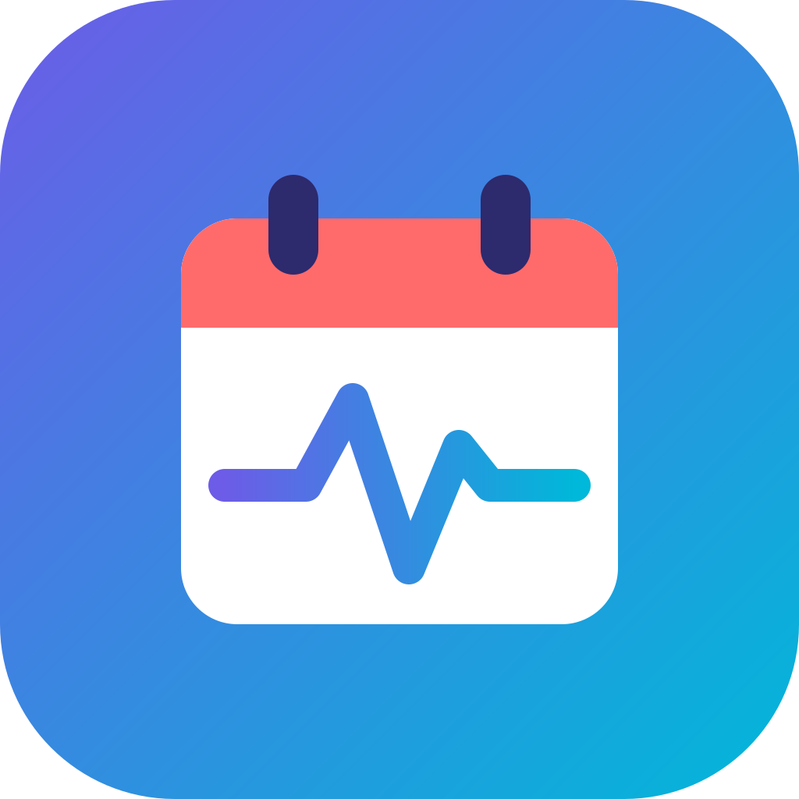

<!doctype html>
<html lang="zh-Hant">
<head>
<script>if(['today','calendar','todo'].includes(new URLSearchParams(location.search).get('widget')))document.documentElement.classList.add('widget-launch-pending');</script>
<style>html.widget-launch-pending body{visibility:hidden!important}</style>
<meta charset="utf-8"><meta name="viewport" content="width=device-width,initial-scale=1,maximum-scale=5,user-scalable=yes,viewport-fit=cover"><meta name="theme-color" content="#f7f8fc"><meta name="description" content="LifeTempo 生活節奏行事曆"><link rel="icon" href="LifeTempo-Icons/windows/LifeTempo.ico"><title>LifeTempo — 生活節奏</title>
<style>
@import url('https://fonts.googleapis.com/css2?family=DM+Sans:wght@400;500;600;700&family=Noto+Sans+TC:wght@400;500;600;700&display=swap');
:root{font-family:'DM Sans','Noto Sans TC',sans-serif;color:#202439;background:#f7f8fc;font-synthesis:none;--ink:#202439;--muted:#9298aa;--line:#eceef4;--purple:#6c5ce7;--teal:#12b8bb;--coral:#ff777c;--blue:#70a7f9;--shadow:0 14px 40px #26304b0b}*{box-sizing:border-box}body{margin:0;min-width:320px;font-size:var(--font-size,100%)}.app{display:grid;grid-template-columns:248px minmax(0,1fr);min-height:100vh;max-width:1600px;margin:auto}.sidebar{background:#fff;border-right:1px solid var(--line);padding:27px 17px;display:flex;flex-direction:column;gap:30px}.brand{display:flex;gap:11px;align-items:center;padding:0 9px}.brand img{width:38px;height:38px}.brand strong{font-size:17px;letter-spacing:-.5px}.brand small{display:block;color:var(--muted);font-size:10px;margin-top:1px;letter-spacing:.3px}.new-btn,.primary{border:0;color:#fff;background:var(--purple);border-radius:11px;padding:12px 16px;font:600 13px inherit;cursor:pointer;box-shadow:0 5px 13px #6c5ce729}.new-btn{width:100%;text-align:left;font-size:13px}.new-btn span{font-size:19px;vertical-align:-2px;margin-right:10px}.nav-label{font-size:10px;text-transform:uppercase;letter-spacing:1.2px;color:#a2a7b5;padding:0 11px 9px}.nav{display:grid;gap:4px}.nav button,.cat-filter{border:0;background:transparent;text-align:left;padding:10px 11px;border-radius:9px;color:#777e91;font:500 12px inherit;cursor:pointer}.nav button.active,.nav button:hover,.cat-filter:hover{background:#f3f1ff;color:var(--purple)}.nav .icon{display:inline-block;width:25px;font-size:15px}.mini-cal{padding:0 8px}.mini-head{display:flex;align-items:center;justify-content:space-between;font-size:12px;font-weight:600;margin:0 1px 12px}.mini-head button,.icon-btn{border:0;background:transparent;color:#858b9e;cursor:pointer;padding:5px;border-radius:7px}.mini-grid{display:grid;grid-template-columns:repeat(7,1fr);gap:3px;text-align:center}.mini-grid span{font-size:9px;color:#aaaeb9;padding:5px 0}.mini-grid button{border:0;background:transparent;color:#697084;border-radius:50%;height:25px;width:25px;font:11px inherit;cursor:pointer}.mini-grid button.today{background:var(--purple);color:#fff}.mini-grid button.selected:not(.today){background:#ece9ff;color:var(--purple)}.cat-list{display:grid;gap:8px}.cat-filter{padding:7px 10px;display:flex;align-items:center;gap:9px;font-size:11px}.dot{width:8px;height:8px;border-radius:50%;display:inline-block}.side-bottom{margin-top:auto;border-top:1px solid var(--line);padding:13px 8px 0;color:#9ba0ae;font-size:10px;line-height:1.7}.main{padding:27px 35px 40px;min-width:0}.topbar{display:flex;justify-content:space-between;align-items:center;gap:16px;margin-bottom:27px}.crumb{color:var(--muted);font-size:11px}.top-actions{display:flex;gap:8px;align-items:center}.search{position:relative}.search input{width:205px;border:1px solid var(--line);background:#fff;border-radius:9px;padding:9px 12px 9px 33px;font:12px inherit;outline:none}.search:before{content:'⌕';position:absolute;left:11px;top:3px;color:#a2a7b5;font-size:22px}.icon-btn{background:#fff;border:1px solid var(--line);height:35px;width:36px;font-size:15px}.hero{display:flex;justify-content:space-between;align-items:center;margin-bottom:23px}.eyebrow{color:var(--purple);font-size:10px;font-weight:700;letter-spacing:1.6px;text-transform:uppercase;margin-bottom:7px}.hero h1{margin:0;font-size:27px;letter-spacing:-1px}.hero p{margin:7px 0 0;color:var(--muted);font-size:11px}.viewbar{display:flex;align-items:center;justify-content:space-between;margin-bottom:17px}.date-controls,.view-switch{display:flex;align-items:center;gap:6px}.date-controls button{background:#fff;border:1px solid var(--line);height:31px;min-width:32px;border-radius:7px;color:#747a8c;cursor:pointer}.date-controls .today-btn{padding:0 11px;font:11px inherit}.date-title{font-size:13px;font-weight:600;margin:0 8px}.view-switch{background:#edecf2;padding:3px;border-radius:9px}.view-switch button{border:0;background:transparent;border-radius:6px;padding:6px 10px;color:#858a9a;font:10px inherit;cursor:pointer}.view-switch button.active{background:#fff;color:var(--purple);box-shadow:0 1px 4px #0000000d}.card{background:#fff;border:1px solid #eff0f5;border-radius:14px;box-shadow:var(--shadow);overflow:hidden}.week-grid{display:grid;grid-template-columns:52px repeat(7,minmax(0,1fr));min-height:590px}.day-head{border-bottom:1px solid var(--line);padding:13px 6px;text-align:center;color:#898fa0;font-size:10px}.day-head strong{display:block;margin:6px auto 0;width:26px;height:26px;line-height:26px;border-radius:50%;font-size:12px;color:var(--ink)}.day-head.is-today strong{background:var(--purple);color:white}.time-col{padding-top:0}.hour{height:57px;position:relative;text-align:right;padding:0 9px;color:#a5a9b6;font-size:9px;transform:translateY(-5px)}.day-col{position:relative;border-left:1px solid #f0f1f6;background:repeating-linear-gradient(to bottom,transparent 0,transparent 56px,#eff0f5 56px,#eff0f5 57px);min-width:0}.event{position:absolute;left:4px;right:4px;border-left:3px solid;border-radius:5px;padding:6px 6px;overflow:hidden;cursor:pointer;font-size:9px;line-height:1.45}.event b{display:block;font-weight:600;font-size:9px;white-space:nowrap;overflow:hidden;text-overflow:ellipsis}.event small{display:block;opacity:.77;font-size:8px}.month-grid{display:grid;grid-template-columns:repeat(7,minmax(0,1fr))}.month-cell{min-height:105px;border-top:1px solid var(--line);border-right:1px solid var(--line);padding:8px;cursor:pointer}.month-cell:nth-child(7n){border-right:0}.month-cell.muted{background:#fbfbfd;color:#b9bdc7}.month-day{font-size:10px;margin-bottom:7px}.month-day.today{background:var(--purple);color:white;border-radius:50%;display:inline-flex;width:22px;height:22px;align-items:center;justify-content:center;margin:-5px 0 2px}.month-event{font-size:9px;padding:3px 5px;border-radius:4px;margin:3px 0;overflow:hidden;white-space:nowrap;text-overflow:ellipsis}.agenda{padding:8px 20px}.agenda-day{display:grid;grid-template-columns:95px 1fr;gap:15px;padding:16px 0;border-bottom:1px solid var(--line)}.agenda-date{font-size:11px;font-weight:600}.agenda-date small{display:block;color:var(--muted);font-weight:400;margin-top:4px}.agenda-items{display:grid;gap:8px}.agenda-item{display:flex;gap:10px;align-items:center;font-size:11px;cursor:pointer}.agenda-item small{color:var(--muted);font-size:9px}.empty{color:#a4a8b5;font-size:11px;padding:8px}.year-grid{display:grid;grid-template-columns:repeat(3,1fr);gap:12px;padding:17px}.year-month{border:1px solid var(--line);border-radius:10px;padding:12px;cursor:pointer}.year-month h3{font-size:12px;margin:0 0 8px}.year-month p{font-size:9px;color:var(--muted);margin:0}.bottom-note{text-align:center;color:#adb1be;font-size:9px;margin:18px 0}.modal-wrap{position:fixed;inset:0;background:#1e223755;display:grid;place-items:center;padding:16px;z-index:4}.modal{background:#fff;border-radius:16px;padding:23px;width:min(470px,100%);box-shadow:0 25px 70px #1a1f3650}.modal h2{font-size:18px;margin:0 0 18px}.form-grid{display:grid;grid-template-columns:1fr 1fr;gap:12px}.field{display:grid;gap:6px}.field.full{grid-column:1/-1}.field label{font-size:10px;color:#777d90}.field input,.field textarea,.field select{border:1px solid var(--line);border-radius:8px;padding:9px 10px;font:12px inherit;outline-color:var(--purple);width:100%}.field textarea{min-height:68px;resize:vertical}.modal-actions{display:flex;justify-content:space-between;margin-top:18px}.modal-actions button{border:0;border-radius:8px;padding:9px 13px;cursor:pointer;font:11px inherit}.cancel{background:#f0f1f5;color:#777d90}.danger{background:#fff0f0;color:#d45e67}.primary{font-size:11px}.toast{position:fixed;bottom:25px;left:50%;transform:translateX(-50%);background:#252a40;color:white;border-radius:9px;padding:10px 15px;font-size:11px;z-index:8}.mobile-head{display:none}
body.dark{--ink:#edf0fb;--muted:#9aa1b5;--line:#34394b;--shadow:0 14px 40px #0003;background:#191c27;color:var(--ink)}body.dark .sidebar,body.dark .card,body.dark .modal,body.dark .search input,body.dark .icon-btn,body.dark .date-controls button,body.dark .bottom-nav{background:#222635;color:var(--ink);border-color:#34394b}body.dark .nav button,body.dark .cat-filter,body.dark .day-head strong{color:#d9dcef}body.dark .day-col{border-color:#34394b;background:repeating-linear-gradient(to bottom,transparent 0,transparent 56px,#34394b 56px,#34394b 57px)}body.dark .month-cell{border-color:#34394b}body.dark .month-cell.muted{background:#1e222f}body.dark .field input,body.dark .field textarea,body.dark .field select{background:#191c27;color:var(--ink);border-color:#41475c}body.dark .mini-grid button{color:#d9dcef}body.dark .mini-grid button.today{background:var(--purple)}.pill{display:inline-flex;align-items:center;padding:3px 7px;border-radius:20px;font-size:9px;background:#f0efff;color:var(--purple)}.tool-row{display:flex;gap:8px;flex-wrap:wrap;margin:0 0 13px}.tool-row button,.tool-row select{border:1px solid var(--line);border-radius:8px;background:white;padding:7px 10px;font:11px inherit;color:#656c7e;cursor:pointer}body.dark .tool-row button,body.dark .tool-row select{background:#222635;color:#d9dcef;border-color:#34394b}.todo-row{display:flex;align-items:flex-start;gap:9px;border-bottom:1px solid var(--line);padding:10px 0;font-size:11px}.todo-row input{accent-color:var(--purple);flex:none;margin-top:2px}.todo-row .task-title{flex:1;min-width:0;white-space:normal;overflow-wrap:anywhere;word-break:break-word;line-height:1.6}.todo-row.done .task-title{text-decoration:line-through;color:var(--muted)}.lunar{font-size:8px;color:var(--muted)}.weeknum{font-size:8px;color:var(--muted);display:block;margin-top:3px}.drag-hint{font-size:9px;color:var(--muted);margin:4px 0 10px}
.hero-actions{display:flex;gap:8px;align-items:center}.hero-actions{align-self:stretch;display:flex;align-items:center!important;justify-content:center}.hero-actions>.primary,.hero-actions>.nlp-btn{position:static!important;top:auto!important;transform:none!important;margin:0!important;height:54px!important;min-height:54px!important;box-sizing:border-box;display:inline-flex;align-items:center;justify-content:center;vertical-align:middle}.nlp-btn{background:#138a91!important;color:#fff!important;border-color:#138a91!important}.choice-grid{display:flex;gap:8px;flex-wrap:wrap}.choice-btn{display:inline-flex;align-items:center;gap:6px;border:1px solid var(--line);background:#fff;border-radius:9px;padding:9px 12px;color:#777d90;font:11px inherit;cursor:pointer}.choice-btn:has(input:checked),.choice-btn.selected{border-color:var(--purple);background:#f3f1ff;color:var(--purple);box-shadow:0 0 0 1px var(--purple) inset}.choice-btn input{width:auto;accent-color:var(--purple)}body.dark .choice-btn{background:#222635;color:#d9dcef;border-color:#34394b}body.dark .choice-btn:has(input:checked),body.dark .choice-btn.selected{background:#302c4f;color:#c5bcff;border-color:var(--purple)}@media(max-width:950px){.app{grid-template-columns:205px 1fr}.main{padding:23px 20px}.week-grid{grid-template-columns:42px repeat(7,minmax(80px,1fr));overflow:auto}.card{overflow:auto}.week-grid{min-width:700px}}
@media(max-width:650px){.app{display:block;padding-bottom:66px}.sidebar{display:none}.main{padding:15px 13px}.topbar{margin-bottom:20px}.mobile-head{display:flex;align-items:center;gap:8px}.mobile-head img{height:29px;width:29px}.mobile-head b{font-size:14px}.crumb{display:none}.search input{width:135px}.hero h1{font-size:22px}.hero{margin-bottom:17px}.viewbar{align-items:flex-start;gap:10px;flex-direction:column}.view-switch{align-self:stretch;justify-content:space-between}.view-switch button{flex:1}.month-cell{min-height:68px;padding:5px}.month-event{font-size:8px;padding:2px}.year-grid{grid-template-columns:repeat(2,1fr)}.week-grid{min-height:530px}.bottom-nav{position:fixed;bottom:0;left:0;right:0;height:57px;display:flex;background:#fff;border-top:1px solid var(--line);z-index:2;justify-content:space-around;align-items:center}.bottom-nav button{border:0;background:none;color:#9297a6;font:10px inherit}.bottom-nav button.active{color:var(--purple)}.bottom-nav span{display:block;font-size:17px;margin-bottom:1px}.agenda-day{grid-template-columns:73px 1fr}}
.invite-actions{display:flex;align-items:center;gap:8px;justify-content:flex-end}.invite-action{min-width:92px;height:34px;padding:0 12px;border:1px solid transparent;border-radius:8px;font:600 11px inherit;cursor:pointer;transition:filter .15s,transform .15s}.invite-action:hover{filter:brightness(.96);transform:translateY(-1px)}.copy-action{background:#6c5ce7;color:#fff;border-color:#6c5ce7}.delete-action{background:#fff0f0;color:#c84752;border-color:#f2c5c8}body.dark .copy-action{background:#8173f1;color:#151328;border-color:#8173f1}body.dark .delete-action{background:#48292e;color:#ffb2b8;border-color:#754047}@media(max-width:520px){.invite-actions{gap:5px}.invite-action{min-width:0;padding:0 8px}}.primary,.new-btn,.tool-row button,.tool-row select,.invite-action,.modal-actions button,.icon-btn,.date-controls button,.view-switch button,.choice-btn,.nlp-btn{box-sizing:border-box;min-height:36px;border-radius:8px;font-family:inherit;font-size:11px;font-weight:600;line-height:1.2;transition:background-color .15s,border-color .15s,color .15s}.primary,.new-btn,.tool-row button,.tool-row select,.invite-action,.modal-actions button,.date-controls button,.view-switch button,.choice-btn,.nlp-btn{padding:0 12px}.primary,.new-btn,.tool-row button,.tool-row select,.invite-action,.modal-actions button,.icon-btn,.date-controls button,.view-switch button,.choice-btn,.nlp-btn{cursor:pointer}.primary:hover,.new-btn:hover,.tool-row button:hover,.invite-action:hover,.modal-actions button:hover,.icon-btn:hover,.date-controls button:hover,.view-switch button:hover,.choice-btn:hover,.nlp-btn:hover{filter:brightness(.96);transform:none}.icon-btn{min-width:36px;width:36px;height:36px;padding:0;display:inline-flex;align-items:center;justify-content:center}.view-switch{align-items:center}.view-switch button{min-height:32px}.choice-btn{display:inline-flex;justify-content:center}.new-btn{height:36px;text-align:left}.primary{height:36px}.tool-row button,.tool-row select,.invite-action,.modal-actions button,.date-controls button,.nlp-btn{height:36px}.delete-action,.danger{background:#fff0f0!important;color:#c84752!important;border:1px solid #f2c5c8!important}.copy-action{background:#6c5ce7!important;color:#fff!important;border:1px solid #6c5ce7!important}.cancel{background:#f0f1f5!important;color:#646b7d!important;border:1px solid #dfe2ea!important}body.dark .delete-action,body.dark .danger{background:#48292e!important;color:#ffb2b8!important;border-color:#754047!important}body.dark .cancel{background:#303546!important;color:#d9dcef!important;border-color:#454b60!important}.nlp-btn{display:inline-flex;align-items:center;justify-content:center;text-align:center;background:#138a91!important;color:#fff!important;border:1px solid #138a91!important}
.todo-row{display:grid;grid-template-columns:24px minmax(0,1fr);align-items:start;gap:8px 12px}
.todo-row>input{margin-top:6px;width:20px;height:20px}
.todo-row .task-title{min-width:0;writing-mode:horizontal-tb;white-space:normal;overflow-wrap:anywhere;word-break:normal;line-height:1.6}
.todo-row .task-actions{grid-column:2;display:flex;align-items:center;flex-wrap:wrap;gap:8px;min-width:0}
.task-actions small{margin-right:auto;white-space:nowrap}
.task-actions button{flex-shrink:0;min-height:40px}
.task-actions [data-taskdelete]{width:40px;height:40px}
@media(min-width:900px){.todo-row{grid-template-columns:24px minmax(0,1fr) auto}.todo-row .task-actions{grid-column:3}}
</style><link rel="manifest" href="manifest.webmanifest"><meta name="theme-color" content="#6c5ce7"><link rel="stylesheet" href="localization.css"></head>
<style>
/* Dark surfaces need their own foregrounds, including category-colored events. */
body.dark{color-scheme:dark;--ink:#f1f4fc;--muted:#bac3d6;--line:#46516a}
body.dark :is(.nav-label,.side-bottom,.bottom-note,.day-head,.hour,.empty,.mini-grid span,.field label,.search:before){color:var(--muted)}
body.dark :is(input,textarea,select){color:var(--ink);background-color:#191c27;border-color:var(--line)}
body.dark :is(input,textarea)::placeholder{color:#aeb9cf;opacity:1}
body.dark :is(a,a:visited){color:#c6c0ff}
body.dark a:hover{color:#eeeaff}
body.dark .eyebrow{color:#c6c0ff}
body.dark .view-switch{background:#191c27}
body.dark :is(.view-switch button,.bottom-nav button,.mini-head button){color:#cbd3e5}
body.dark :is(.view-switch button.active,.nav button.active,.nav button:hover,.cat-filter:hover,.mini-grid button.selected:not(.today)){background:#393354;color:#eeeaff}
body.dark .bottom-nav button.active{color:#d5ceff}
body.dark .pill{background:#393354;color:#eeeaff}
body.dark .month-cell.muted{color:#bac3d6}
body.dark :is(.event,.month-event){color:#f1f4fc!important}
body.dark .event small{color:#d9e1f2;opacity:1}
body.dark :is(.choice-btn.selected,.choice-btn:has(input:checked)){background:#393354;color:#eeeaff;border-color:#b9adff}
body.dark :is(.primary,.new-btn,.copy-action){background:#6551ce!important;color:#fff!important;border-color:#a99aef!important}
body.dark :is(.day-head.is-today strong,.mini-grid button.today,.month-day.today){background:#6551ce;color:#fff}
body.dark :is(button,input,select,textarea,a):focus-visible{outline:2px solid #d5ceff;outline-offset:3px}
body.dark button:disabled{color:#aeb9cf!important;background:#303546!important;cursor:not-allowed}
.help-btn{width:20px;height:20px;border-radius:50%;border:1px solid var(--line);background:var(--bg);color:var(--muted);font-size:12px;cursor:pointer;display:inline-flex;align-items:center;justify-content:center;margin-left:6px;transition:all 0.15s}.help-btn:hover{background:var(--purple);color:#fff;border-color:var(--purple)}.help-tooltip{position:fixed;background:#fff;border:1px solid var(--line);border-radius:10px;padding:16px;box-shadow:0 10px 40px rgba(0,0,0,0.15);max-width:320px;z-index:1000;color:var(--ink)}.help-tooltip h4{margin:0 0 8px;font-size:14px;color:var(--purple)}.help-tooltip p{margin:0 0 8px;font-size:12px;line-height:1.5;color:var(--muted)}.help-tooltip p:last-child{margin:0}.help-tooltip .close-btn{position:absolute;top:8px;right:8px;border:none;background:none;font-size:18px;cursor:pointer;color:var(--muted)}.help-tooltip .close-btn:hover{color:var(--ink)}body.dark .help-tooltip{background:#222635;border-color:#34394b;color:var(--ink)}body.dark .help-tooltip h4{color:#d5ceff}body.dark .help-tooltip p{color:#bac3d6}body.dark .help-tooltip .close-btn{color:#9aa1b5}body.dark .help-tooltip .close-btn:hover{color:#f1f4fc}
/* Readable controls and help text, scaled by the calendar font-size setting. */
:root{font-size:var(--font-size,100%);--muted:#687187}
body{font-size:1rem;line-height:1.6}
button,input,select,textarea{font-family:inherit}
.field label,.choice-btn,.nav button,.cat-filter,.date-title,.agenda-item,.todo-row{font-size:1rem;line-height:1.5}
.field input,.field textarea,.field select,.search input,#nlpText{font-size:1rem!important;line-height:1.6}
select option{font-size:1rem}.ai-select{width:100%;padding:8px 10px;border-radius:8px;border:1px solid #c9cedd;background:#fff;color:#1f2430}.ai-select option{background:#fff;color:#1f2430}body.dark .ai-select{background:#191c27;color:#f1f4fc;border-color:#46516a}body.dark .ai-select option{background:#191c27;color:#f1f4fc}
.drag-hint,.field small,.modal small,.agenda small,.local-source,.local-weather small,.local-weather details{font-size:.9375rem!important;line-height:1.75}
.hero p,.side-bottom,.bottom-note,.empty,.crumb,.nav-label,.agenda-date,.local-weather p{font-size:.9375rem;line-height:1.7}
.pill,.local-badge,.lunar,.weeknum{font-size:.8125rem;line-height:1.5}
.primary,.new-btn,.tool-row,.tool-row button,.tool-row select,.invite-action,.modal-actions button,.date-controls button,.view-switch button,.choice-btn,.nlp-btn,.bottom-nav button,.local-weather button{font-size:1rem;line-height:1.5}
.primary,.new-btn,.tool-row button,.tool-row select,.invite-action,.modal-actions button,.date-controls button,.view-switch button,.choice-btn,.nlp-btn{height:auto;min-height:44px;padding:9px 14px;white-space:normal}
.field{min-width:0;gap:8px}
.form-grid{gap:18px 16px}
.modal{max-height:94vh;overflow:auto}
.modal h2{font-size:1.375rem}
.modal-actions,.hero,.topbar,.date-controls,.hero-actions{flex-wrap:wrap;gap:12px}
.hero-actions>.primary,.hero-actions>.nlp-btn{height:auto!important;min-height:54px!important}
.choice-grid{gap:10px}
.tool-row{align-items:center}
.field input[type=checkbox],.field input[type=radio],.choice-btn input{width:auto;min-width:18px;min-height:18px}
@media(max-width:650px){
  .form-grid{grid-template-columns:1fr}
  .modal{padding:20px 16px}
  .hero-actions{width:100%;justify-content:flex-start}
  .top-actions{flex-wrap:wrap}
  .view-switch{flex-wrap:wrap}
  .modal-actions>span{display:flex;flex-wrap:wrap;gap:8px}
  .bottom-nav{height:auto;min-height:64px;flex-wrap:wrap}
  .app{padding-bottom:100px}
}
/* 中等螢幕優化 (950px-1200px) */
@media(min-width:951px) and (max-width:1199px){
  .app{max-width:1100px}
  .sidebar{width:220px;padding:24px 16px}
  .main{padding:24px 22px}
}
/* 超寬屏適配 (大螢幕、4K) */
@media(min-width:1920px){
  .app{max-width:1800px}
  .sidebar{width:280px;padding:32px 20px}
  .main{padding:32px 28px}
  .hero h1{font-size:32px}
  .month-cell{min-height:100px}
  .event{font-size:14px}
}
/* 中等螢幕優化 (筆記型電腦) */
@media(min-width:1200px) and (max-width:1439px){
  .app{max-width:1400px}
  .sidebar{width:230px;padding:24px 16px}
}
/* 平板橫向 */
@media(min-width:768px) and (max-width:1024px) and (orientation:landscape){
  .app{grid-template-columns:200px 1fr}
  .sidebar{padding:20px 14px}
  .brand img{width:32px;height:32px}
  .brand strong{font-size:15px}
  .week-grid{grid-template-columns:38px repeat(7,minmax(70px,1fr))}
  .card{overflow:auto}
}
/* 平板縱向 */
@media(min-width:768px) and (max-width:1024px) and (orientation:portrait){
  .app{grid-template-columns:180px 1fr}
  .sidebar{padding:18px 12px}
  .brand img{width:30px;height:30px}
  .brand strong{font-size:14px}
  .nav button,.cat-filter{font-size:11px;padding:8px 10px}
  .week-grid{grid-template-columns:35px repeat(7,minmax(65px,1fr))}
}
/* 小型手機 (< 375px) */
@media(max-width:374px){
  .main{padding:12px 10px}
  .hero h1{font-size:20px}
  .mobile-head img{width:26px;height:26px}
  .mobile-head b{font-size:13px}
  .search input{width:110px}
  .month-cell{min-height:60px;padding:4px}
  .bottom-nav button{font-size:9px}
  .bottom-nav span{font-size:15px}
}
/* 大型手機 (375px - 428px) */
@media(min-width:375px) and (max-width:428px){
  .main{padding:16px 14px}
  .hero h1{font-size:24px}
  .search input{width:150px}
}
/* 手機橫向 */
@media(max-width:950px) and (orientation:landscape){
  .week-grid{min-height:380px}
  .month-cell{min-height:50px}
  .hero{margin-bottom:12px}
  .hero h1{font-size:20px}
  .main{padding:15px 18px}
}
/* 手機縱向動態安全區域 (iPhone X+ notch) */
@supports(padding:max(0px)){
  .bottom-nav{padding-bottom:max(16px,env(safe-area-inset-bottom))}
  .app{padding-bottom:max(100px,calc(66px + env(safe-area-inset-bottom)))}
}
/* 小型平板 (600px-767px) */
@media(min-width:600px) and (max-width:767px){
  .app{grid-template-columns:190px 1fr}
  .sidebar{padding:22px 15px}
  .brand img{width:34px;height:34px}
  .brand strong{font-size:16px}
  .week-grid{grid-template-columns:40px repeat(7,minmax(75px,1fr))}
  .card{overflow:auto}
}
/* 流體字體適配 - 根據螢幕寬度自動調整（覆蓋之前的設定） */
@media(min-width:1200px){
  body{font-size:1.025rem}
}
@media(min-width:1600px){
  body{font-size:1.05rem}
}
@media(min-width:1920px){
  body{font-size:1.075rem}
}
.nav [data-goview="小工具"],.bottom-nav [data-goview="小工具"]{display:none!important}
/* 觸控裝置優化 - 增大觸控目標 */
@media(hover:none) and (pointer:coarse){
  .nav button,.cat-filter,.icon-btn,.choice-btn{min-height:48px;min-width:48px}
  .month-cell button{min-height:44px;min-width:44px}
  .bottom-nav button{min-height:52px}
}
/* 高 DPI 螢幕優化 */
@media(-webkit-min-device-pixel-ratio:2),(min-resolution:192dpi){
  .brand img,.mobile-head img{image-rendering:-webkit-optimize-contrast}
}
/* 深色模式下的螢幕亮度適配 */
@media(prefers-contrast:high){
  body.dark{--ink:#ffffff;--line:#000000}
  body.dark .sidebar,body.dark .card,body.dark .modal{border:2px solid var(--line)}
}
/* 系統字體縮放適配 */
@media(max-resolution:1dppx){
  :root{--font-size:calc(var(--font-size,100%) * 0.95)}
}
@media(min-resolution:2dppx){
  :root{--font-size:calc(var(--font-size,100%) * 1.05)}
}
</style>
<style>
.nav{grid-template-columns:minmax(0,1fr);align-items:stretch}
.nav .nav-item{display:grid;grid-template-columns:minmax(0,1fr) 28px;align-items:center}
@media(min-width:651px){
  .nav .nav-item{column-gap:4px}
  .nav .nav-item > button:not(.help-btn){min-width:0}
  .nav .nav-item > button:not(.help-btn){font-family:inherit;font-size:.875rem;font-weight:500;line-height:1.5;gap:8px;padding:10px 4px 10px 8px;white-space:normal}
  .nav .nav-item .icon{width:20px;text-align:center;flex:none}
  .nav [data-goview="共享"] .nav-action-label{min-width:0;white-space:normal;overflow-wrap:anywhere;text-wrap:balance}
  .nav .nav-item > .help-btn{align-self:center;justify-self:end;flex:none;line-height:1}
}
.nav .nav-label{grid-column:1/-1}
.page-navigation{display:flex;justify-content:flex-end;gap:8px;margin:0 0 12px}
.page-navigation button{min-height:36px;padding:0 12px;border:1px solid var(--line);border-radius:8px;background:transparent;color:var(--ink);font:inherit;font-size:.875rem}
@media(max-width:650px){.page-navigation{display:grid;grid-template-columns:repeat(3,minmax(0,1fr));gap:6px;margin:0 0 12px}.page-navigation button{min-width:0;min-height:38px;padding:6px 4px;font-size:.875rem;line-height:1.2}}
@media(max-width:650px){.month-day{display:flex;flex-direction:column;align-items:flex-start;justify-content:flex-start;gap:2px;width:100%;height:auto;line-height:1.2}.month-day.today{background:transparent!important;color:var(--ink)}.month-day-number{display:inline-flex;flex:none;align-items:center;justify-content:center;width:24px;height:24px;border-radius:50%}.month-day.today .month-day-number{background:var(--purple);color:#fff}.month-day .lunar{font-size:.625rem;line-height:1.2}}
.nav .help-btn{width:24px;height:24px;min-width:24px;min-height:24px;padding:0;margin:0;justify-self:center;border:1px solid #138a91;background:#138a91;color:#fff;font-size:14px;font-weight:700;box-shadow:0 0 0 2px #138a9126}
.nav .help-btn:hover{background:#0f7379;color:#fff;border-color:#0f7379}
#add,.top-actions #theme{display:none!important}
#aiPlanBtn,#aiImportNav{display:none!important}
@media(min-width:651px){#aiPlanBtn,#aiPlanNav,#aiSettingsSection{display:none!important}#aiImportNav{display:flex!important}}
#aiImportNav{color:#800020!important}
.nav button[data-goview="週"].active:not(:hover){background:transparent!important;color:#777e91!important}
/* Desktop calendar: compact columns and a consistent light/dark palette. */
@media(min-width:651px){
  .bottom-nav{display:none!important}
  .app{padding-bottom:0}
}
@media(min-width:651px){
  .sidebar{min-width:0;gap:22px;scrollbar-gutter:stable;padding-inline:12px}
  .sidebar>section,.sidebar .mini-cal{min-width:0}
  .mini-cal{padding:0 2px}
  .mini-head{gap:4px;font-size:.8125rem}
  .mini-head>span:last-child{display:flex;flex:none}
  .mini-grid{grid-template-columns:repeat(7,minmax(0,1fr));gap:2px}
  .mini-grid button{width:100%;min-width:0;max-width:30px;height:30px;padding:0;justify-self:center;font-size:.8125rem}
  .mini-grid span{min-width:0;font-size:.6875rem}
  .nav .nav-item{grid-template-columns:minmax(0,1fr) 28px}
  .nav .help-btn{width:24px;height:24px;min-height:24px;border-radius:50%;background:#e4f3f2;color:#176d70;border-color:#a9d5d3;box-shadow:none;font-size:13px}
  body.dark .nav .help-btn{background:#253e46;color:#a4e0df;border-color:#42656c}
  body.dark .nav .help-btn:hover{background:#31535b;color:#fff}
  .workspace-calendar .day-head{padding:10px 6px!important;font-size:.75rem!important;background:#f4f6fb!important}
  .workspace-calendar .day-head strong{width:32px!important;height:32px!important;line-height:32px!important;font-size:1.125rem!important;margin:4px auto!important}
  .workspace-calendar .day-head .lunar{display:block;font-size:.75rem;line-height:1.5}
  .workspace-calendar .day-head .local-badges{justify-content:center;gap:3px;margin-top:4px}
  .workspace-calendar .day-head .local-badge{font-size:.6875rem;padding:2px 5px}
  .workspace-calendar .weeknum{font-size:.6875rem;line-height:1.5}
  .workspace-calendar .hour{font-size:.6875rem;transform:none;line-height:1;padding:3px 7px 0}
  body.dark .workspace-calendar .hour,body.dark.workspace-calendar .hour{color:#acb8cf}
  body.dark .day-head .lunar{color:#b2bfd6}
  :is(body.dark.workspace-calendar,body.dark .workspace-calendar) .day-head.is-today{background:#203e43!important}
  .workspace-calendar .viewbar{flex-wrap:wrap;gap:12px}
  .workspace-calendar .date-controls,.workspace-calendar .view-switch{flex-wrap:wrap}
}
</style>
<style>
.event.overlapped{padding:3px 4px;box-shadow:0 0 0 1px #fff}
.event.overlapped b{white-space:normal;overflow-wrap:anywhere}
body.dark .event.overlapped{box-shadow:0 0 0 1px #222635}
.event.event-more{border-left-style:dashed;border-color:var(--purple)!important;background:transparent!important;color:var(--purple)!important;text-align:center;display:flex;flex-direction:column;justify-content:center}
.event.event-more b{font-size:13px}
/* 手機：功能列固定在頁首，內容從其下方開始，不再遮擋頁面 */
@media(max-width:650px){
  html{scroll-padding-top:var(--top-nav-h,64px)}
  .bottom-nav{position:fixed;inset:0 0 auto 0;z-index:3;height:auto;min-height:0;flex-wrap:nowrap;justify-content:space-around;gap:2px;padding:max(6px,env(safe-area-inset-top)) 6px 6px;border-top:0;border-bottom:1px solid var(--line);box-shadow:0 3px 12px #18203512}
  .bottom-nav button{flex:1 1 0;min-width:0;min-height:48px;padding:4px 2px;white-space:nowrap}
  .app{padding-top:var(--top-nav-h,64px);padding-bottom:16px}
}
</style>
<body><div id="root"></div><script src="speech-session.js"></script><script src="localization-data.js"></script><script src="localization-core.js"></script><script src="calendar-core.js"></script><script src="vendor/ical.js"></script><script src="calendar-ics.js"></script><script src="ai-request.js"></script><script>
(function(){
  const clean=value=>String(value||'').replace(/\*\*/g,'').trim();
  const dateValue=(year,month,day)=>{
    const date=new Date(Number(year),Number(month)-1,Number(day));
    return date.getFullYear()===Number(year)&&date.getMonth()===Number(month)-1&&date.getDate()===Number(day)
      ?`${date.getFullYear()}-${String(date.getMonth()+1).padStart(2,'0')}-${String(date.getDate()).padStart(2,'0')}`:'';
  };
  const categoryFor=text=>{
    if(/早餐|午餐|晚餐|下午茶|美食|小吃|咖啡|便當|飲食/.test(text))return '個人';
    if(/交通|高鐵|火車|車程|搭乘|前往|返回|返程|車站|還車|機場/.test(text))return '旅遊';
    if(/景點|博物館|古蹟|老街|園區|市場|展覽|遊覽/.test(text))return '旅遊';
    return '其他';
  };
  function parse(markdown,defaultYear){
    const events=[];let year=Number(defaultYear)||new Date().getFullYear(),activeDate='',lastMonth=0,lastDate='';
    for(const raw of String(markdown||'').split(/\r?\n/)){
      const heading=raw.match(/^\s*#{0,3}\s*(?:\*\*)?[^\n]*?\bDay\s*\d+\s*[：:]\s*(?:(20\d{2})\s*[年/-])?(\d{1,2})\s*[月/-]\s*(\d{1,2})\s*日?/i)
        ||raw.match(/^\s*#{0,3}\s*(?:\*\*)?[^\n]*?第\s*\d+\s*天\s*[：:]\s*(?:(20\d{2})\s*[年/-])?(\d{1,2})\s*[月/-]\s*(\d{1,2})\s*日?/i);
      if(heading){
        const explicitYear=heading[1],month=Number(heading[2]),day=Number(heading[3]);
        if(explicitYear)year=Number(explicitYear);else if(lastMonth&&month<lastMonth)year++;
        activeDate=dateValue(year,month,day);lastMonth=month;lastDate=activeDate;
        continue;
      }
      const bullet=raw.match(/^\s*[-*+•]\s+(.+)$/);if(!bullet)continue;
      const line=bullet[1].replace(/\*\*/g,'').trim();
      const timed=line.match(/^(\d{1,2}):(\d{2})(?:\s*[-–—~～至到]\s*(?:(\d{1,2}):(\d{2}))?)?\s*\|\s*(.+)$/);
      if(!timed)continue;
      const hour=Number(timed[1]),minute=Number(timed[2]),endHour=timed[3]==null?null:Number(timed[3]),endMinute=timed[4]==null?null:Number(timed[4]);
      const validClock=(h,m)=>h>=0&&h<=23&&m>=0&&m<=59;
      const start=validClock(hour,minute)?`${String(hour).padStart(2,'0')}:${String(minute).padStart(2,'0')}`:'';
      const end=endHour==null?'':validClock(endHour,endMinute)?`${String(endHour).padStart(2,'0')}:${String(endMinute).padStart(2,'0')}`:'';
      const source=timed[5].trim(),links=[...source.matchAll(/\[[^\]]*\]\((https?:\/\/[^)]+)\)/g)].map(match=>match[1]);
      const title=clean(source.replace(/\[([^\]]*)\]\(https?:\/\/[^)]+\)/g,'$1').replace(/<https?:\/\/[^>]+>/g,''));
      const titleBreak=title.search(/[（(]/),conciseTitle=titleBreak>0?title.slice(0,titleBreak).trim():title,notes=conciseTitle===title?'':title;
      let date=activeDate;
      const inline=source.match(/(?:20\d{2}\s*[年/-])?(\d{1,2})\s*[月/-]\s*(\d{1,2})\s*日?/);
      if(inline){const inlineYear=source.match(/(20\d{2})\s*[年/-]/);date=dateValue(inlineYear?Number(inlineYear[1]):year,Number(inline[1]),Number(inline[2]));}
      let endDate=date;
      if(date&&start&&end&&end<start&&hour>=18&&endHour<6){const d=new Date(date+'T00:00:00');d.setDate(d.getDate()+1);endDate=dateValue(d.getFullYear(),d.getMonth()+1,d.getDate());}
      const category=categoryFor(title);
      events.push({date,start,end,endDate,title:conciseTitle,category,place:'',notes,links,source:raw.trim(),missingDate:!date,missingStart:!start,missingEnd:!end});
    }
    return {events,year,lastDate};
  }
  globalThis.AIImport={parse};
  function open(options){
    const {root,escapeHtml,events,save,render,toast,calendarId,timezone,categories,permission}=options;
    if(permission==='read-only'){toast('唯讀行事曆不能匯入行程');return;}
    const year=new Date().getFullYear();
    root.insertAdjacentHTML('beforeend',`<div class="modal-wrap" id="aiImportWrap"><section class="modal" style="width:min(980px,100%);max-height:94vh;overflow:auto"><h2>AI 行程匯入</h2><p class="drag-hint">貼上外部 AI 產生的 Markdown 行程，或讀取 .md 檔，例如「📅 Day 1：10/24」及「09:30 - 11:15 | 行程名稱」。未寫年份時依下方年份推算，跨年日期會自動遞增。</p><div class="field"><label for="aiImportYear">未標示年份時使用</label><input id="aiImportYear" type="number" min="1900" max="2200" value="${year}" style="max-width:180px"></div><div class="field"><label for="aiImportSource">行程文字</label><textarea id="aiImportSource" rows="10" placeholder="貼上外部 AI 行程…"></textarea></div><div class="tool-row"><input id="aiImportFile" type="file" accept=".md,.markdown,text/markdown" hidden><button type="button" id="aiImportChooseFile">讀取 MD 檔</button><button id="aiImportParse" class="primary">解析並檢查</button><span id="aiImportStatus" class="drag-hint" role="status"></span></div><div id="aiImportPreview" style="max-height:48vh;overflow:auto;margin-top:12px"></div><div class="modal-actions"><button type="button" class="cancel" id="aiImportCancel">取消</button><button type="button" class="primary" id="aiImportSave" disabled>確認並匯入行程</button></div></section></div>`);
    const wrap=root.querySelector('#aiImportWrap'),$=selector=>wrap.querySelector(selector);let parsed=[];
    $('#aiImportCancel').onclick=()=>wrap.remove();wrap.onclick=event=>{if(event.target===wrap)wrap.remove();};
    const status=message=>{$('#aiImportStatus').textContent=message;};
    $('#aiImportChooseFile').onclick=()=>$('#aiImportFile').click();
    $('#aiImportFile').onchange=async()=>{const file=$('#aiImportFile').files?.[0];if(!file)return;try{if(!/\.(?:md|markdown)$/i.test(file.name))throw new Error('請選擇 Markdown（.md）檔案。');const text=(await file.text()).replace(/^\uFEFF/,'');$('#aiImportSource').value=text;parsed=[];$('#aiImportPreview').innerHTML='';$('#aiImportSave').disabled=true;status(`已讀取「${file.name}」，請按「解析並檢查」。`);}catch(error){status(error.message||'無法讀取檔案，請確認檔案格式後重試。');}finally{$('#aiImportFile').value='';}};
    const renderPreview=()=>{
      const host=$('#aiImportPreview');
      if(!parsed.length){host.innerHTML='<p class="empty">尚未解析到包含時間與行程內容的項目。</p>';$('#aiImportSave').disabled=true;return;}
      host.innerHTML=parsed.map((event,index)=>`<article class="card" style="padding:12px;margin:10px 0"><div class="form-grid"><div class="field"><label>日期 ${event.missingDate?'<span style="color:#c84752">需確認</span>':''}</label><input type="date" data-aiimport="${index}" data-field="date" value="${escapeHtml(event.date)}"></div><div class="field"><label>開始時間 ${event.missingStart?'<span style="color:#c84752">需確認</span>':''}</label><input type="time" data-aiimport="${index}" data-field="start" value="${escapeHtml(event.start)}"></div><div class="field"><label>結束時間 ${event.missingEnd?'<span style="color:#c84752">需補上</span>':''}</label><input type="time" data-aiimport="${index}" data-field="end" value="${escapeHtml(event.end)}"></div><div class="field"><label>分類</label><select data-aiimport="${index}" data-field="category">${Object.keys(categories).map(category=>`<option ${event.category===category?'selected':''}>${escapeHtml(category)}</option>`).join('')}</select></div><div class="field full"><label>行程名稱</label><input data-aiimport="${index}" data-field="title" value="${escapeHtml(event.title)}"></div><div class="field full"><label>地點（可選）</label><input data-aiimport="${index}" data-field="place" value="${escapeHtml(event.place)}"></div><div class="field full"><label>說明（可選）</label><textarea data-aiimport="${index}" data-field="notes" rows="2" placeholder="補充交通、餐點或其他說明">${escapeHtml(event.notes)}</textarea>${event.links.length?`<small>已辨識連結：${event.links.map(url=>`<a href="${escapeHtml(url)}" target="_blank" rel="noopener">${escapeHtml(url)}</a>`).join('、')}</small>`:''}</div></div></article>`).join('');
      host.querySelectorAll('[data-aiimport]').forEach(input=>input.oninput=input.onchange=()=>{const event=parsed[Number(input.dataset.aiimport)],field=input.dataset.field;event[field]=input.value;event.missingDate=!event.date;event.missingStart=!event.start;event.missingEnd=!event.end;const labelText={date:'日期',start:'開始時間',end:'結束時間'}[field];if(labelText){const missing={date:event.missingDate,start:event.missingStart,end:event.missingEnd}[field];input.closest('.field').querySelector('label').innerHTML=labelText+(missing?' <span style="color:#c84752">'+(field==='end'?'需補上':'需確認')+'</span>':'');}$('#aiImportSave').disabled=false;status('欄位已更新；按「確認並匯入行程」時會再次檢查。');});
      $('#aiImportSave').disabled=false;
    };
    $('#aiImportParse').onclick=()=>{
      const requestedYear=Number($('#aiImportYear').value);
      if(!Number.isInteger(requestedYear)||requestedYear<1900||requestedYear>2200){status('請輸入有效年份。');return;}
      const result=parse($('#aiImportSource').value,requestedYear);parsed=result.events;
      status(parsed.length?`辨識到 ${parsed.length} 筆行程。紅字欄位需要確認；行程文字和連結會保留。`:'找不到符合格式的行程，請確認每筆項目有時間及「|」分隔符號。');renderPreview();
    };
    $('#aiImportSave').onclick=()=>{
      const errors=[];
      parsed.forEach((event,index)=>{
        if(!event.title.trim())errors.push(`第 ${index+1} 筆缺少行程名稱`);
        const dateMatch=event.date.match(/^(\d{4})-(\d{2})-(\d{2})$/),dateObj=dateMatch?new Date(Number(dateMatch[1]),Number(dateMatch[2])-1,Number(dateMatch[3])):null;
        if(!dateObj||dateObj.getFullYear()!==Number(dateMatch[1])||dateObj.getMonth()!==Number(dateMatch[2])-1||dateObj.getDate()!==Number(dateMatch[3]))errors.push(`第 ${index+1} 筆日期需要確認`);
        if(!/^([01]\d|2[0-3]):[0-5]\d$/.test(event.start))errors.push(`第 ${index+1} 筆開始時間需要確認`);
        if(!/^([01]\d|2[0-3]):[0-5]\d$/.test(event.end))errors.push(`第 ${index+1} 筆結束時間需要補上`);
        if(event.start&&event.end&&event.start===event.end)errors.push(`第 ${index+1} 筆起訖時間相同`);
        if(event.start&&event.end&&event.end<event.start&&!(event.start>='18:00'&&event.end<'06:00'))errors.push(`第 ${index+1} 筆結束時間早於開始時間，請確認是否跨午夜`);
      });
      if(errors.length){status(errors.slice(0,5).join('；')+(errors.length>5?'…':''));return;}
      if(!parsed.length){status('請先解析至少一筆行程。');return;}
      const imported=parsed.map(event=>{
        let endDate=event.date;
        if(event.end<event.start&&event.start>='18:00'&&event.end<'06:00'){const next=new Date(event.date+'T00:00:00');next.setDate(next.getDate()+1);endDate=dateValue(next.getFullYear(),next.getMonth()+1,next.getDate());}
        return{id:crypto.randomUUID(),title:event.title.trim().slice(0,200),date:event.date,endDate,start:event.start,end:event.end,category:categories[event.category]?event.category:'其他',calendarId,timezone,place:event.place.trim().slice(0,200),notes:event.notes.trim().slice(0,2000),links:event.links,repeat:'不重複',interval:1,weekdays:[],reminders:[],reminder:'不提醒',attendees:[],allDay:false};
      });
      events.push(...imported);save();wrap.remove();render();toast(`已匯入 ${imported.length} 筆行程`);
    };
  }
  globalThis.AIImportUI={open};
})();
</script>
<script src="booking-client.js"></script><script>
const $=s=>document.querySelector(s), root=$('#root');
const DEFAULT_COLORS={工作:'#6c5ce7',個人:'#ff777c',家庭:'#12b8bb',健康:'#70a7f9',旅遊:'#35a86b',其他:'#e4a849'};
let COLORS={...DEFAULT_COLORS,...JSON.parse(localStorage.getItem('lifetempo.categories')||'{}')};
let clockFormat=localStorage.getItem('lifetempo.clockFormat')||'24';
let fontSize=localStorage.getItem('lifetempo.fontSize')||'100';
const today=new Date();today.setHours(0,0,0,0);let cursor=new Date(today),view='週',category='全部',query='',dark=localStorage.getItem('lifetempo.theme')==='dark'||(!['dark','light'].includes(localStorage.getItem('lifetempo.theme'))&&matchMedia('(prefers-color-scheme: dark)').matches),selectedTz=localStorage.getItem('lifetempo.timezone')||Intl.DateTimeFormat().resolvedOptions().timeZone;
document.body.classList.toggle('dark',dark);
document.documentElement.style.setProperty('--font-size',fontSize+'%');
// 根據螢幕寬度自動調整字體大小（如果用戶未手動設定）
function autoAdjustFontSize(){
  const userSetFontSize=localStorage.getItem('lifetempo.fontSize');
  if(userSetFontSize)return; // 用戶已手動設定，不自動調整
  const width=window.innerWidth;
  let autoSize=100;
  if(width<375)autoSize=90;
  else if(width<428)autoSize=95;
  else if(width<768)autoSize=100;
  else if(width<1024)autoSize=105;
  else if(width<1440)autoSize=110;
  else if(width<1920)autoSize=115;
  else autoSize=120;
  document.documentElement.style.setProperty('--font-size',autoSize+'%');
}
autoAdjustFontSize();
let resizeTimeout;
window.addEventListener('resize',()=>{clearTimeout(resizeTimeout);resizeTimeout=setTimeout(autoAdjustFontSize,200)});
const iso=d=>{const x=new Date(d);return `${x.getFullYear()}-${String(x.getMonth()+1).padStart(2,'0')}-${String(x.getDate()).padStart(2,'0')}`};
const parse=s=>{const [y,m,d]=s.split('-').map(Number);return new Date(y,m-1,d)};
const dayNames=['日','一','二','三','四','五','六'], pad=n=>String(n).padStart(2,'0');
function formatTime(value){if(!value)return'';const [h,m]=value.split(':').map(Number);if(clockFormat==='24')return `${pad(h)}:${pad(m)}`;return `${h<12?'上午':'下午'} ${h%12||12}:${pad(m)}`}
function formatHour(h){return clockFormat==='24'?`${pad(h)}:00`:`${h<12?'上午':'下午'} ${h%12||12}:00`}
let events=(()=>{try{return JSON.parse(localStorage.getItem('lifetempo.events'))||[]}catch{return []}})();
let tasks=(()=>{try{return JSON.parse(localStorage.getItem('lifetempo.tasks'))||[]}catch{return []}})();
let calendars=(()=>{try{return JSON.parse(localStorage.getItem('lifetempo.calendars'))||[{id:'personal',name:'個人行事曆',permission:'personal-only',owner:'我'}]}catch{return [{id:'personal',name:'個人行事曆',permission:'personal-only',owner:'我'}]}})();
function saveCalendars(){localStorage.setItem('lifetempo.calendars',JSON.stringify(calendars));requestCalendarSync()}
let currentUser=localStorage.getItem('lifetempo.currentUser')||'我';
let inviteChannels=(()=>{try{return JSON.parse(localStorage.getItem('lifetempo.inviteChannels'))||['Email','LINE','Messenger','微信']}catch{return ['Email','LINE','Messenger','微信']}})();
function saveInviteChannels(){localStorage.setItem('lifetempo.inviteChannels',JSON.stringify(inviteChannels));requestCalendarSync()}
let bookingPrefs=(()=>{try{return JSON.parse(localStorage.getItem('lifetempo.bookingPrefs'))||{start:9,end:17,days:[1,2,3,4,5],duration:60}}catch{return {start:9,end:17,days:[1,2,3,4,5],duration:60}}})();let bookingSlug=sessionStorage.getItem('lifetempo.bookingSlug')||'';
function save(){localStorage.setItem('lifetempo.events',JSON.stringify(events));syncAndroidWidgets();requestCalendarSync();if(sessionStorage.getItem('lifetempo.ownerToken')&&typeof syncBusyPeriods==='function')syncBusyPeriods()}
function saveTasks(){localStorage.setItem('lifetempo.tasks',JSON.stringify(tasks));syncAndroidWidgets();requestCalendarSync()}
function syncAndroidWidgets(){
  const bridge=window.LifeTempoWidget;if(typeof bridge?.updateSnapshot!=='function')return;
  try{
    const start=new Date(today.getFullYear(),today.getMonth(),1),end=new Date(start);end.setFullYear(end.getFullYear()+2);end.setDate(end.getDate()-1);
    const upcoming=expandEvents(start,end).map(event=>({title:event.title,date:event.displayDate||event.occurrence||event.date,start:event.start||'',allDay:!!event.allDay,color:color(event)}));
    bridge.updateSnapshot(JSON.stringify(upcoming),JSON.stringify(tasks.filter(task=>!task.done).slice(0,100)),LocalCalendar.settings.weekStart);
  }catch{}
}
const widgetLaunch=new URLSearchParams(location.search).get('widget');
if(widgetLaunch==='todo')view='待辦';else if(widgetLaunch==='today')view='日';else if(widgetLaunch==='calendar')view='月';
function color(e){return COLORS[e.category]||COLORS.其他}
function matches(e){return(category==='全部'||e.category===category)&&(!query||`${e.title} ${e.notes} ${e.place} ${e.category} ${(e.attendees||[]).join(' ')}`.toLowerCase().includes(query.toLowerCase()))&&(!attendeeFilter||(e.attendees||[]).includes(attendeeFilter))&&(!calendarFilter||(e.calendarId||'personal')===calendarFilter)}
let attendeeFilter='';
let calendarFilter='';
const permissionLabels={'personal-only':'僅限個人','read-only':'僅能檢視','full-access':'可編輯與管理'};
function permissionFor(e){const c=calendars.find(c=>c.id===(e.calendarId||'personal'));if(!c)return'personal-only';if(currentUser!=='我'){const invitation=(c.invitations||[]).find(i=>i.person===currentUser&&i.rsvp==='已接受');if(invitation)return invitation.permission}return c.permission||'personal-only'}
function esc(s=''){return String(s).replace(/[&<>"']/g,c=>({'&':'&amp;','<':'&lt;','>':'&gt;','"':'&quot;',"'":'&#39;'}[c]))}
function weekStart(d){const x=new Date(d);x.setDate(x.getDate()-(x.getDay()-LocalCalendar.settings.weekStart+7)%7);return x}
function monthLabel(d){return `${localYear(d.getFullYear())} 年 ${d.getMonth()+1} 月`}
function expandEvents(from,to){return CalendarCore.expand(events,iso(from),iso(to))}
function occurrencesOn(date){const d=parse(date);return expandEvents(d,d)}
function weekNo(date){const d=new Date(Date.UTC(date.getFullYear(),date.getMonth(),date.getDate()));d.setUTCDate(d.getUTCDate()+4-(d.getUTCDay()||7));const y=new Date(Date.UTC(d.getUTCFullYear(),0,1));return Math.ceil((((d-y)/86400000)+1)/7)}
function lunarLabel(d){return LocalCalendar.settings.lunar?LocalCalendar.lunar(d):''}
function header(){const w=weekStart(cursor),we=new Date(w);we.setDate(we.getDate()+6);let title=view==='月'?monthLabel(cursor):view==='年'?`${localYear(cursor.getFullYear())} 年`:view==='日'?`${cursor.getMonth()+1} 月 ${cursor.getDate()} 日, ${localYear(cursor.getFullYear())}`:view==='清單'?'即將到來':`${w.getMonth()+1}月 ${w.getDate()}日 — ${we.getMonth()+1}月 ${we.getDate()}日`;let sub=new Intl.DateTimeFormat('zh-TW',{weekday:'long',month:'long',day:'numeric'}).format(today);return `<header class="topbar"><div class="mobile-head"><b>LifeTempo</b></div><div class="crumb">我的日曆　/　${view}視圖</div><div class="top-actions"><label class="search"><input id="search" value="${esc(query)}" placeholder="搜尋行程…" aria-label="搜尋行程"></label><select id="attendeeFilter" class="tool-row" style="margin:0;padding:6px 8px" aria-label="依參與者篩選"><option value="">所有參與者</option>${[...new Set(events.flatMap(e=>e.attendees||[]))].map(a=>`<option ${attendeeFilter===a?'selected':''}>${esc(a)}</option>`).join('')}</select><button class="icon-btn" id="export" title="匯出 JSON">⇧</button><button class="icon-btn" id="import" title="匯入自己的行事曆（JSON／ICS）">⇩</button><button class="icon-btn" id="icsExport" title="匯出 iCalendar">▣</button><button class="icon-btn" id="theme" title="切換主題">${dark?'☀':'☾'}</button><input hidden id="file" type="file" accept="application/json,.ics,text/calendar"></div></header><section class="hero"><div><div class="eyebrow">YOUR TIME, IN RHYTHM</div><h1>生活節奏</h1><p>${sub}　·　本機行事曆　·　${esc(selectedTz)} <span class="lunar">· 農曆${esc(lunarLabel(today))}</span> <span class="weeknum" style="display:inline">· 第 ${weekNo(today)} 週</span></p></div><span class="hero-actions"><button class="tool-row nlp-btn" id="aiPlanBtn" style="background:linear-gradient(135deg,#f093fb 0%,#f5576c 100%)!important;border-color:#f5576c!important">✨ AI 行程規劃</button><button class="tool-row nlp-btn" id="naturalAdd">✦ 文字／語音新增</button><button class="primary" id="add">＋　新增行程</button></span></section><section class="viewbar"><div class="date-controls"><button id="prev">‹</button><button class="today-btn" id="today">今天</button><button id="next">›</button><span class="date-title">${title}</span></div><div class="view-switch">${['日','週','月','年','清單','待辦'].map(v=>`<button data-view="${v}" class="${v===view?'active':''}">${v}</button>`).join('')}</div></section><div class="tool-row" style="margin-top:-8px"><span class="pill">${esc(calendars.find(c=>c.id===calendarFilter)?.name||'所有行事曆')}</span><button id="clearCalendarFilter">顯示全部行事曆</button></div>`}
function side(){const first=new Date(cursor.getFullYear(),cursor.getMonth(),1),offset=(first.getDay()-LocalCalendar.settings.weekStart+7)%7,days=new Date(cursor.getFullYear(),cursor.getMonth()+1,0).getDate(),prevDays=new Date(cursor.getFullYear(),cursor.getMonth(),0).getDate();let cells=[];for(let i=0;i<42;i++){let n=i-offset+1,d,muted=false;if(n<1){d=new Date(cursor.getFullYear(),cursor.getMonth()-1,prevDays+n);muted=true}else if(n>days){d=new Date(cursor.getFullYear(),cursor.getMonth()+1,n-days);muted=true}else d=new Date(cursor.getFullYear(),cursor.getMonth(),n);cells.push(`<button data-mini="${iso(d)}" class="${iso(d)===iso(today)?'today':''} ${iso(d)===iso(cursor)?'selected':''}" style="${muted?'opacity:.42':''}">${d.getDate()}</button>`)}return `<aside class="sidebar"><div class="brand"><div><strong>LifeTempo</strong><small>生活節奏</small></div></div><button class="new-btn" id="addSide"><span>＋</span>建立新行程</button><nav class="nav"><div class="nav-label">工作區</div><button id="aiImportNav"><span class="icon">⇧</span>AI 行程匯入</button>${[['日曆','▦','週'],['待辦事項','☑','待辦'],['空檔預約','◷','預約'],['共享與權限','♧','共享'],['行事曆設定','⚙','設定']].map(([n,i,v])=>`<button data-goview="${v}" class="${view===v?'active':''}"><span class="icon">${i}</span>${n}</button>`).join('')}</nav><section class="mini-cal"><div class="mini-head"><span>${localYear(cursor.getFullYear())} 年 ${cursor.getMonth()+1} 月</span><span><button id="miniPrev">‹</button><button id="miniNext">›</button></span></div><div class="mini-grid">${localWeekdays().map(d=>`<span>${d}</span>`).join('')}${cells.join('')}</div></section><section><div class="nav-label">我的分類</div><div class="cat-list"><button data-cat="全部" class="cat-filter"><i class="dot" style="background:#b4b7c4"></i>所有行程</button>${Object.entries(COLORS).map(([n,c])=>`<button data-cat="${n}" class="cat-filter"><i class="dot" style="background:${c}"></i>${esc(n)}</button>`).join('')}<button id="manageCats" class="cat-filter">＋ 管理分類</button></div><div class="nav-label" style="margin-top:14px">共享行事曆</div><div class="cat-list">${calendars.map(c=>`<button data-calendar="${c.id}" class="cat-filter"><i class="dot" style="background:${c.id==='personal'?'#969bab':'#12b8bb'}"></i>${esc(c.name)} <small style="margin-left:auto">${permissionLabels[c.permission]}</small></button>`).join('')}<button data-goview="共享" class="cat-filter">＋ 管理共享與權限</button></div></section><div class="side-bottom">本機資料僅在此瀏覽器保存<br>共享權限是本機示範設定</div></aside>`}
function dayEventBoxes(list,maxCols=3){
  const boxes=list.map(e=>{let [h,m]=(e.start||'09:00').split(':').map(Number),[eh,em]=(e.end||'10:00').split(':').map(Number),top=e.allDay?2:h*57+m/60*57,height=e.allDay?30:Math.max(35,((eh*60+em-h*60-m)/60)*57);return{e,top,height,col:0,cols:1}});
  const extra=[];let group=[],groupEnd=0,colEnds=[],seq=0;
  const close=()=>{
    const cols=colEnds.length||1;
    if(cols>maxCols){
      const id=seq++,hidden=group.filter(b=>b.col>=maxCols-1);
      group.forEach(b=>{b.cols=maxCols;b.group=id;if(b.col>=maxCols-1)b.hidden=true});
      const top=Math.min(...hidden.map(b=>b.top)),end=Math.max(...hidden.map(b=>b.top+b.height));
      extra.push({more:hidden.length,top,height:Math.max(35,end-top),col:maxCols-1,cols:maxCols,group:id});
    }else group.forEach(b=>b.cols=cols);
    group=[];colEnds=[];
  };
  for(const b of [...boxes].sort((a,c)=>a.top-c.top||c.height-a.height)){
    if(group.length&&b.top>=groupEnd)close();
    let col=colEnds.findIndex(end=>end<=b.top);if(col<0)col=colEnds.length;
    colEnds[col]=b.top+b.height;b.col=col;group.push(b);groupEnd=Math.max(group.length>1?groupEnd:0,b.top+b.height);
  }
  close();return [...boxes,...extra];
}
function weekView(){const days=Array.from({length:view==='日'?1:7},(_,i)=>{let d=weekStart(cursor);if(view==='日')d=new Date(cursor);else d.setDate(d.getDate()+i);return d});const dayBoxes=days.map(d=>dayEventBoxes(occurrencesOn(iso(d)).filter(matches)));let html=`<div class="week-grid" style="grid-template-columns:52px ${dayBoxes.map(b=>`minmax(${Math.max(80,Math.max(...b.map(x=>x.cols),1)*64)}px,1fr)`).join(' ')}"><div class="day-head">${days.length===7?`<span class="weeknum">第 ${weekNo(days[Math.min(days.length-1,(1-LocalCalendar.settings.weekStart+7)%7)])} 週</span>`:''}</div>${days.map(d=>`<div class="day-head ${iso(d)===iso(today)?'is-today':''}" data-local-date="${iso(d)}">${dayNames[d.getDay()]}<strong>${d.getDate()}</strong><span class="lunar">${esc(lunarLabel(d))}</span></div>`).join('')}<div class="time-col">${Array.from({length:24},(_,i)=>`<div class="hour">${formatHour(i)}</div>`).join('')}</div>${days.map((d,di)=>`<div class="day-col" data-dropdate="${iso(d)}">${dayBoxes[di].map(box=>{const {e,top,height,col,cols}=box,pos=cols>1?`left:calc(2px + (100% - 4px) * ${col} / ${cols});right:auto;width:calc((100% - 4px) / ${cols} - 2px);`:'';if(box.more)return `<div class="event event-more overlapped" role="button" tabindex="0" data-more-group="${di}-${box.group}" style="top:${top}px;height:${height}px;${pos}"><b>+${box.more}</b><small>查看全部</small></div>`;return `<div class="event${cols>1?' overlapped':''}"${box.group!==undefined?` data-more-group="${di}-${box.group}"`:''} data-edit="${esc(e.id)}" data-occurrence="${e.occurrence||e.date}" data-recurrence="${esc(e.recurrenceKey||e.date)}" draggable="true" style="top:${top}px;height:${height}px;${pos}${box.hidden?'display:none;':''}border-color:${color(e)};background:${color(e)}18;color:${color(e)}"><b>${esc(e.title)}</b><small>${e.allDay?'全天':formatTime(e.start)+' – '+formatTime(e.end)}</small></div>`}).join('')}</div>`).join('')}</div>`;return `<div class="card">${html}</div>`}
function monthView(){const first=new Date(cursor.getFullYear(),cursor.getMonth(),1),offset=(first.getDay()-LocalCalendar.settings.weekStart+7)%7,count=new Date(cursor.getFullYear(),cursor.getMonth()+1,0).getDate();let cells=[];for(let i=0;i<42;i++){let n=i-offset+1,d,muted=false;if(n<1){d=new Date(cursor.getFullYear(),cursor.getMonth()-1,new Date(cursor.getFullYear(),cursor.getMonth(),0).getDate()+n);muted=true}else if(n>count){d=new Date(cursor.getFullYear(),cursor.getMonth()+1,n-count);muted=true}else d=new Date(cursor.getFullYear(),cursor.getMonth(),n);let es=occurrencesOn(iso(d)).filter(matches);cells.push(`<div class="month-cell ${muted?'muted':''}" data-day="${iso(d)}"><div class="month-day ${iso(d)===iso(today)?'today':''}">${d.getDate()} <span class="lunar">${esc(lunarLabel(d))}</span></div>${es.slice(0,3).map(e=>`<div class="month-event" data-edit="${esc(e.id)}" data-occurrence="${e.occurrence||e.date}" data-recurrence="${esc(e.recurrenceKey||e.date)}" style="color:${color(e)};background:${color(e)}18">${e.allDay?'全天':esc(e.start)} ${esc(e.title)}</div>`).join('')}${es.length>3?`<small>+${es.length-3} 更多</small>`:''}</div>`)}return `<div class="card"><div class="month-grid">${localWeekdays().map(n=>`<div class="day-head">週${n}</div>`).join('')}${cells.join('')}</div></div>`}
function agendaView(){const start=view==='日'?new Date(cursor):today;return `<div class="card agenda">${Array.from({length:view==='日'?1:56},(_,i)=>{const d=new Date(start);d.setDate(d.getDate()+i);const es=occurrencesOn(iso(d)).filter(matches).sort((a,b)=>(a.start||'').localeCompare(b.start||''));if(!es.length&&(query||category!=='全部'))return '';return `<div class="agenda-day"><div class="agenda-date" data-local-date="${iso(d)}">${d.getMonth()+1}月 ${d.getDate()}日<small>週${dayNames[d.getDay()]} · ${esc(localDayDetail(d))}</small></div><div class="agenda-items">${es.length?es.map(e=>`<div class="agenda-item" data-edit="${esc(e.id)}" data-occurrence="${e.occurrence||e.date}" data-recurrence="${esc(e.recurrenceKey||e.date)}"><i class="dot" style="background:${color(e)}"></i><span>${esc(e.title)} <small>${e.allDay?'全天':formatTime(e.start)+' – '+formatTime(e.end)}${e.place?' · '+esc(e.place):''}${e.attendees?.length?' · '+esc(e.attendees.join(', ')):''}${(e.reminders||[]).length?' · 提醒 '+esc(e.reminders.join('、')):''}${(e.links||[]).map(l=>` · <a href="${esc(/^https?:\/\//i.test(l)?l:'#')}" target="_blank" rel="noopener">連結</a>`).join('')}</small></span></div>`).join(''):'<span class="empty">目前沒有行程</span>'}</div></div>`}).join('')}</div>`}
function yearView(){return `<div class="card year-grid">${Array.from({length:12},(_,i)=>{let n=i+1,count=expandEvents(new Date(cursor.getFullYear(),i,1),new Date(cursor.getFullYear(),i+1,0)).filter(matches).length;return `<div class="year-month" data-month="${i}"><h3>${n} 月</h3><p>${count?`${count} 個行程`:'安排慢一點也沒關係'}</p></div>`}).join('')}</div>`}
function miniMarkup(){let d=new Date(cursor.getFullYear(),cursor.getMonth(),1),off=(d.getDay()-LocalCalendar.settings.weekStart+7)%7,len=new Date(cursor.getFullYear(),cursor.getMonth()+1,0).getDate();return `<div class="mini-head"><span>${localYear(cursor.getFullYear())} 年 ${cursor.getMonth()+1} 月</span><span><button id="miniPrev">‹</button><button id="miniNext">›</button></span></div><div class="mini-grid">${localWeekdays().map(x=>`<span>${x}</span>`).join('')}${Array.from({length:42},(_,i)=>{let n=i-off+1;return `<button data-mini="${iso(new Date(cursor.getFullYear(),n<1?cursor.getMonth()-1:n>len?cursor.getMonth()+1:cursor.getMonth(),n<1?new Date(cursor.getFullYear(),cursor.getMonth(),0).getDate()+n:n>len?n-len:n))}">${n<1?new Date(cursor.getFullYear(),cursor.getMonth(),0).getDate()+n:n>len?n-len:n}</button>`}).join('')}</div>`}
function render(){root.innerHTML=`<div class="app">${side()}<main class="main">${header()}${query?searchView():view==='週'||view==='日'?weekView():view==='月'?monthView():view==='年'?yearView():view==='待辦'?todoView():view==='預約'?bookingView():view==='設定'?settingsView():view==='共享'?sharingView():agendaView()}<div class="bottom-note">行程與設定保存在此裝置。透過匯出備份轉移資料。</div></main></div><nav class="bottom-nav"><button data-goview="日" class="${view==='日'?'active':''}"><span>◷</span>今天</button><button data-goview="週" class="${view==='週'?'active':''}"><span>▦</span>週曆</button><button data-goview="月" class="${view==='月'?'active':''}"><span>▤</span>月曆</button><button id="addMobile"><span>＋</span>新增</button></nav>`;bind();bindTaskTitleEdits();bindSettingsControls();addHelpButtons()}
function sharingView(){return `<section class="tool-row"><button id="createCalendar" class="primary">＋ 建立共享行事曆</button><button id="addInviteChannel">＋ 新增通訊軟體</button><span class="pill">目前身分：${esc(currentUser)}</span>${currentUser!=='我'?'<button id="ownerMode" class="tool-row">切換回擁有者</button>':''}</section><section class="card agenda"><h3>行事曆與存取權限</h3>${calendars.map(c=>`<article class="agenda-day" style="grid-template-columns:1fr auto"><div><b>${esc(c.name)}</b> <span class="pill">${permissionLabels[c.permission]}</span><small style="display:block;color:var(--muted);margin-top:6px">擁有者：${esc(c.owner||'我')} · 成員：${(c.members||[]).length?esc(c.members.join(', ')):'尚無成員'}</small></div><div>${c.id!=='personal'?`<button class="tool-row" data-invitecalendar="${c.id}">邀請人員</button> <button class="tool-row" data-editcalendar="${c.id}">設定</button> <button class="tool-row" data-deletecalendar="${c.id}">刪除</button>`:''}</div></article>`).join('')}<p class="drag-hint">支援管道：${inviteChannels.map(esc).join('、')}。新增通訊軟體後即可用來標記邀請方式。personal-only 不共享；read-only 成員只能檢視；full-access 成員可編輯與管理。</p><h3>邀請記錄</h3>${calendars.flatMap(c=>(c.invitations||[]).map(i=>`<article class="agenda-day" style="grid-template-columns:1fr auto"><div><b>${esc(i.person)}</b> · ${esc(i.channel)} · ${esc(c.name)}<small style="display:block;color:var(--muted)">權限：${permissionLabels[i.permission]} · RSVP：${esc(i.rsvp||'待回覆')}</small></div><div class="invite-actions"><button class="invite-action copy-action" data-copyinvite="${c.id}|${i.id}">複製邀請</button><button class="invite-action copy-action" data-copyjoin="${c.id}|${i.id}">複製加入連結</button><button class="invite-action delete-action" data-deleteinvite="${c.id}|${i.id}">刪除邀請</button></div></article>`)).join('')||'<p class="empty">目前沒有邀請記錄。</p>'}<p class="drag-hint">本機版本不會直接連線或傳送到 LINE、Messenger、微信等平台；複製邀請後，請自行貼到所選通訊軟體。</p></section>`}
function todoView(){return `<section class="tool-row todo-controls"><input id="newTask" placeholder="新增待辦事項…" style="flex:1;min-width:140px;border:1px solid var(--line);border-radius:8px;padding:9px 11px;font:12px inherit"><input id="taskDue" type="date" value="${iso(cursor)}" style="border:1px solid var(--line);border-radius:8px;padding:7px"><button id="addTask">文字解析並安排日曆</button></section><p class="drag-hint">輸入待辦描述後按「文字解析並安排日曆」，即直接排入日曆。未指定時間時預設 09:00，時長 1 小時；可再點選行程調整。</p><section class="card agenda">${tasks.length?tasks.map(t=>`<div class="todo-row ${t.done?'done':''}" data-task="${t.id}"><input type="checkbox" data-taskcheck="${t.id}" ${t.done?'checked':''}><span class="task-title">${esc(t.title)}</span><div class="task-actions"><small>${t.due||'未排日期'}</small><button type="button" data-taskplan="${t.id}">安排／查看行程</button><button class="icon-btn" data-taskdelete="${t.id}" aria-label="刪除待辦事項">×</button></div></div>`).join(''):'<p class="empty">待辦清單是空的，新增一項小任務開始吧。</p>'}</section>`}
function bookingView(){let start=new Date(today);let dates=Array.from({length:14},(_,i)=>{let d=new Date(start);d.setDate(d.getDate()+i);return d}).filter(d=>bookingPrefs.days.includes(d.getDay()));let slots=[];for(const d of dates)for(let h=bookingPrefs.start;h+bookingPrefs.duration/60<=bookingPrefs.end;h+=bookingPrefs.duration/60){const time=`${pad(Math.floor(h))}:${pad(h%1*60)}`,endMinutes=h*60+bookingPrefs.duration,end=`${pad(Math.floor(endMinutes/60))}:${pad(endMinutes%60)}`,occupied=occurrencesOn(iso(d)).some(e=>e.allDay||e.start<end&&e.end>time);if(!occupied)slots.push({date:iso(d),time,end})}const connected=!!sessionStorage.getItem('lifetempo.ownerToken');const publicUrl=bookingSlug?`${location.origin}/book/${encodeURIComponent(bookingSlug)}`:'';return `<section class="tool-row"><span class="pill">${connected?'預約服務已連線':'尚未連線預約服務'}</span><button id="connectBookingService">${connected?'重新連線':'連線預約服務'}</button><button id="publishBookingService" ${connected?'':'disabled'}>發布／同步</button><button id="copyPublicBooking" ${connected&&bookingSlug?'':'disabled'}>複製公開連結</button><button id="configureBooking">設定可預約時段</button></section><div class="card agenda"><p class="drag-hint">可預約：${bookingPrefs.days.map(x=>'日一二三四五六'[x]).join('、')} ${formatHour(bookingPrefs.start)}–${formatHour(bookingPrefs.end)}，每段 ${bookingPrefs.duration} 分鐘。公開預約需先啟動服務並發布。</p>${publicUrl?`<p class="drag-hint">公開連結：<a href="${esc(publicUrl)}" target="_blank" rel="noopener">${esc(publicUrl)}</a></p>`:''}<div class="booking-slots"><div class="booking-columns" aria-hidden="true"><span>可預約日期</span><span>時段</span><span>操作</span></div>${slots.slice(0,35).map(s=>`<div class="booking-slot"><time class="booking-date" datetime="${s.date}">${s.date}</time><span class="booking-time">${formatTime(s.time)}<span class="booking-time-separator">–</span>${formatTime(s.end)}</span><button type="button" data-book="${s.date}|${s.time}|${s.end}" class="booking-action" aria-label="${s.date} ${formatTime(s.time)} 本機建立預約">＋ 建立預約</button></div>`).join('')||'<p class="empty">目前沒有可預約時段，請調整時段設定。</p>'}</div></div>`}
function seasonalTerm(d){return LocalCalendar.settings.terms?LocalCalendarData.terms[iso(d)]||'':''}
function parseNaturalTime(input){
  const number=value=>{if(/^\d+$/.test(value))return Number(value);const digits='零一二三四五六七八九';value=value.replace(/兩|俩/g,'二');if(/^\d+[零一二三四五六七八九]$/.test(value)){const units={零:0,一:1,二:2,三:3,四:4,五:5,六:6,七:7,八:8,九:9};return Number(value[0])*10+units[value[1]]}if(value==='十')return 10;if(value.includes('十')){const [a,b]=value.split('十');return (a?digits.indexOf(a):1)*10+(b?digits.indexOf(b):0)}return digits.indexOf(value)};
  let text=input.replace(/[０-９]/g,c=>String(c.charCodeAt(0)-65296));
  const n='[0-9零一二兩俩三四五六七八九十]{1,3}',period='凌晨|清晨|早上|上午|中午|下午|傍晚|晚上|深夜';
  const re=new RegExp('(?<![0-9])(?:('+period+')\\s*)?('+n+')\\s*(?:[:：]\\s*('+n+')|[點点時时](?:\\s*(半|一刻|三刻|'+n+'\\s*分?))?)(?![0-9])','g');
  const matches=[...text.matchAll(re)];
  const fallbackPeriod=(text.match(new RegExp(period))||[''])[0];
  const minutes=(match,inherited='')=>{let h=number(match[2]);const part=(match[4]||'').replace(/\s|分/g,'');let m=match[3]?number(match[3]):part==='半'?30:part==='一刻'?15:part==='三刻'?45:part?number(part):0;const p=match[1]||inherited||fallbackPeriod;if(h<0||h>23||m<0||m>59)throw Error('時間格式無效，請使用例如「下午3點30分」或「15:30」。');if(/下午|傍晚|晚上|深夜/.test(p)&&h<12)h+=12;if(/凌晨|清晨|早上|上午/.test(p)&&h===12)h=0;if(p==='中午'&&h<11)h+=12;return h*60+m};
  let start=540,end=600;
  if(matches.length){const first=matches[0];start=minutes(first);end=start+60;let consumed=first[0].length;
    const rest=text.slice(first.index+first[0].length);
    const next=matches[1];
    if(next&&/^\s*(?:到|至|[-~～–—])\s*$/.test(text.slice(first.index+first[0].length,next.index))){end=minutes(next,first[1]);if(end<=start)end+=1440;consumed=next.index+next[0].length-first.index;}
    else {const short=rest.match(new RegExp('^\\s*(?:到|至|[-~～–—])\\s*('+n+')(?![0-9零一二兩三四五六七八九十])'));if(short){end=minutes([null,null,short[1]],first[1]);if(end<=start)end+=1440;consumed+=short[0].length;}}
    text=text.slice(0,first.index)+' '+text.slice(first.index+consumed);
    if(fallbackPeriod&&!first[1])text=text.replace(fallbackPeriod,' ');
  }else if(fallbackPeriod){
    // 只有時段、沒有幾點時，依時段給合理預設時間而非一律 09:00。
    start={凌晨:60,清晨:360,早上:480,上午:540,中午:720,下午:840,傍晚:1080,晚上:1140,深夜:1320}[fallbackPeriod];end=start+60;
    text=text.replace(fallbackPeriod,' ');
  }
  return {start:String(Math.floor(start/60)).padStart(2,'0')+':'+String(start%60).padStart(2,'0'),endMinutes:end,text};
}
function mergeSpeechFinal(existing,raw){const value=String(raw||'').trim();if(!value)return existing;const norm=s=>String(s||'').replace(/[\s，,。；;！？!?、.]/g,'').toLowerCase(),prior=norm(existing),next=norm(value);if(!next)return existing;if(next.length>=6&&prior.slice(-600).includes(next))return existing;let overlap=0;for(let n=Math.min(prior.length,next.length);n>=4;n--){if(prior.slice(-n)===next.slice(0,n)){overlap=n;break}}if(overlap>=next.length)return existing;let addition=value;if(overlap){let seen=0,cut=0;for(;cut<value.length&&seen<overlap;cut++){if(!/[\s，,。；;！？!?、.]/.test(value[cut]))seen++}addition=value.slice(cut).replace(/^[\s，,。；;！？!?、.]+/,'')}return addition?existing+(existing?'，':'')+addition:existing}function parseNaturalLanguage(input){let text=String(input||'').trim().replace(/[０-９]/g,c=>String(c.charCodeAt(0)-65296)),date=new Date(today),time='09:00',attendees=[],place='',notes='';text=text.replace(/今晚/,'今天晚上').replace(/明晚/,'明天晚上').replace(/今早/,'今天早上').replace(/明早/,'明天早上').replace(/今天下午/,'今天下午').replace(/大後天/,'後天');const dateMatchers=[[/後天/,(d)=>d.setDate(d.getDate()+2)],[/明天/,(d)=>d.setDate(d.getDate()+1)],[/今天/,(d)=>d.setDate(d.getDate())]];for(const [re,fn] of dateMatchers){if(re.test(text)){text=text.replace(re,' ');fn(date);break}}const isoMatch=text.match(/(20\d{2})[-/.年](\d{1,2})[-/.月](\d{1,2})日?/);if(isoMatch){date=new Date(+isoMatch[1],+isoMatch[2]-1,+isoMatch[3]);text=text.replace(isoMatch[0],' ')}else{const md=text.match(/(\d{1,2})月(\d{1,2})日/);if(md){date=new Date(today.getFullYear(),+md[1]-1,+md[2]);text=text.replace(md[0],' ')}}const weekday=text.match(/下(?:週|周)([一二三四五六日天])/);if(weekday){const idx='日一二三四五六'.indexOf(weekday[1]==='天'?'日':weekday[1]);date=weekStart(today);date.setDate(date.getDate()+7+(idx-LocalCalendar.settings.weekStart+7)%7);text=text.replace(weekday[0],' ')}const clock=parseNaturalTime(text);time=clock.start;text=clock.text;const person=text.match(/(?:和|與|跟)\s*([A-Za-z][\w.-]*|[\u4e00-\u9fff]{2,4})(?=\s|$|[，,。；;])/);if(person){attendees=[person[1]];text=text.replace(person[0],' ')}const loc=text.match(/在\s*([^，,。；;]+?)(?=(慢跑|跑步|散步|開會|討論|會議|吃飯|喝咖啡|健身|上課|看診|約談|領包裹|取包裹|$))/);if(loc){place=loc[1].trim();text=text.replace(loc[0],' ')}text=text.trim().replace(/^(?:請|幫我|提醒我|安排|新增|建立|我要|我想要|想要|要去|要|想|記得|我)\s*/,'').replace(/^(?:去|前往)\s*/,'').replace(/[，,。；;]/g,' ').replace(/\s+/g,' ').trim();text=text.replace(/^(?:請|麻煩|幫我|替我|提醒我|安排|新增|建立|預約|排定|排|我要|我想要|想要|記得|我|去|前往)+/,'').replace(/(?:幫我|替我|麻煩|安排我|提醒我|新增|建立|預約)(?=.{0,12}(?:開會|會議|吃飯|喝咖啡|健身|上課|看診|慢跑|跑步|散步|運動|工作))/g,'').replace(/(?:一下|吧|好嗎|可以嗎|行程)$/,'').trim();if(!text)text='新行程';const endMin=clock.endMinutes;return{title:text,date:iso(date),start:time,end:`${pad(Math.floor(endMin/60)%24)}:${pad(endMin%60)}`,category:'工作',place,notes,attendees,repeat:'不重複',reminders:[],allDay:false}}function openNaturalInput(){root.insertAdjacentHTML('beforeend',`<div class="modal-wrap" id="nlpWrap"><section class="modal"><h2>自然語言快速新增</h2><p class="drag-hint">例如：「明天下午三點半和 Alex 在體育場慢跑」</p><textarea id="nlpText" style="width:100%;min-height:88px;border:1px solid var(--line);border-radius:8px;padding:10px;font:13px inherit" placeholder="描述你的行程…"></textarea><div class="tool-row" style="margin-top:10px"><button type="button" id="voiceInput">🎙 開始語音輸入</button><button type="button" id="parseNlp" class="primary">解析文字</button></div><p id="nlpVoiceStatus" class="drag-hint" role="status" aria-live="polite"></p><div id="nlpPreview" class="drag-hint"></div><div class="modal-actions"><button class="cancel" id="nlpCancel">取消</button><button class="primary" id="nlpContinue" disabled>確認並編輯行程</button></div></section></div>`);let parsed=null,rec=null,finalText='',voiceActive=false,sessionBase='';const voice=$('#voiceInput'),voiceStatus=$('#nlpVoiceStatus');const appendFinal=raw=>{finalText=mergeSpeechFinal(finalText,raw)};const setVoiceActive=active=>{voiceActive=active;voice.textContent=active?'■ 停止語音輸入':'🎙 開始語音輸入'};$('#nlpCancel').onclick=()=>{voiceActive=false;if(rec)rec.stop();$('#nlpWrap').remove()};$('#parseNlp').onclick=()=>{const value=$('#nlpText').value;if(!value.trim()){toast('請先輸入行程描述');return}parsed=parseNaturalLanguage(value);$('#nlpPreview').innerHTML=`<b>解析結果</b><br>標題：${esc(parsed.title)}<br>日期：${parsed.date}<br>時間：${parsed.start}–${parsed.end}（24 小時制；${formatTime(parsed.start)}–${formatTime(parsed.end)}）<br>地點：${esc(parsed.place||'未指定')}<br>參與者：${esc(parsed.attendees.join('、')||'未指定')}`;$('#nlpContinue').disabled=false};$('#nlpContinue').onclick=()=>{if(!parsed)return;voiceActive=false;if(rec)rec.stop();$('#nlpWrap').remove();openModal(null,parsed)};voice.onclick=()=>{if(voiceActive){voiceActive=false;if(rec)rec.stop();return}const SR=window.SpeechRecognition||window.webkitSpeechRecognition;if(!SR){voiceStatus.textContent='此瀏覽器不支援語音辨識，請直接輸入文字。';return}try{voiceActive=true;finalText=$('#nlpText').value.trim();setVoiceActive(true);voiceStatus.textContent='正在聆聽；可長時間說話或停頓，按「停止語音輸入」後再解析。';const startRecognition=()=>{if(!voiceActive)return;sessionBase=finalText;const current=new SR();rec=current;current.lang='zh-TW';current.continuous=true;current.interimResults=true;current.onresult=e=>{let sessionFinal='',interim='';for(let i=0;i<e.results.length;i++){const t=e.results[i][0].transcript;if(e.results[i].isFinal)sessionFinal+=(sessionFinal?'，':'')+t;else interim+=t}finalText=mergeSpeechFinal(sessionBase,sessionFinal);$('#nlpText').value=finalText+(interim?((finalText?'，':'')+interim):'');voiceStatus.textContent=interim?'辨識中：'+interim:'正在聆聽；已辨識內容會保留。'};current.onerror=e=>{if(['not-allowed','service-not-allowed','audio-capture'].includes(e.error)){voiceActive=false;setVoiceActive(false);voiceStatus.textContent=e.error==='audio-capture'?'無法取得麥克風，請檢查系統設定。':'請允許麥克風權限後重試。'}else voiceStatus.textContent='語音辨識暫停；已保留目前文字，仍在嘗試繼續聆聽。'};current.onend=()=>{if(rec!==current)return;rec=null;if(voiceActive){voiceStatus.textContent='語音辨識短暫中止，正在重新啟動；已辨識內容會保留。';setTimeout(startRecognition,350);return}setVoiceActive(false);if($('#nlpText').value.trim()){voiceStatus.textContent='語音輸入已停止，可檢查內容並解析。';$('#parseNlp').click()}else voiceStatus.textContent='沒有辨識到語音，請重試或直接輸入文字。'};current.start()};startRecognition()}catch{voiceActive=false;rec=null;setVoiceActive(false);voiceStatus.textContent='無法啟動語音辨識，請重試或直接輸入文字。'}}}
const CUSTOM_ENDPOINTS=[{name:'OpenAI',url:'https://api.openai.com/v1/chat/completions'},{name:'OpenRouter',url:'https://openrouter.ai/api/v1/chat/completions'},{name:'DeepSeek',url:'https://api.deepseek.com/chat/completions'},{name:'Groq',url:'https://api.groq.com/openai/v1/chat/completions'},{name:'Mistral',url:'https://api.mistral.ai/v1/chat/completions'},{name:'Together AI',url:'https://api.together.xyz/v1/chat/completions'},{name:'xAI Grok',url:'https://api.x.ai/v1/chat/completions'},{name:'Perplexity',url:'https://api.perplexity.ai/chat/completions'},{name:'Moonshot Kimi',url:'https://api.moonshot.cn/v1/chat/completions'},{name:'SiliconFlow',url:'https://api.siliconflow.cn/v1/chat/completions'},{name:'Ollama（本機）',url:'http://localhost:11434/v1/chat/completions'},{name:'LM Studio（本機）',url:'http://localhost:1234/v1/chat/completions'}];
const AI_PROVIDERS=[{value:'browser',label:'瀏覽器內建 AI（免 API Key）',models:[]},{value:'gemini',label:'Google Gemini',models:[{id:'gemini-1.5-flash-latest',name:'Gemini 1.5 Flash（免費）'},{id:'gemini-2.0-flash-exp',name:'Gemini 2.0 Flash 實驗版'}]},{value:'openai',label:'OpenAI',models:[{id:'gpt-4o-mini',name:'GPT-4o mini'},{id:'gpt-4o',name:'GPT-4o'},{id:'gpt-4-turbo',name:'GPT-4 Turbo'}]},{value:'anthropic',label:'Anthropic Claude',models:[{id:'claude-3-haiku-20240307',name:'Claude 3 Haiku'},{id:'claude-3-5-sonnet-20241022',name:'Claude 3.5 Sonnet'}]},{value:'openrouter',label:'OpenRouter',models:[{id:'google/gemini-flash-1.5',name:'Gemini Flash 1.5（免費）'},{id:'openai/gpt-4o-mini',name:'GPT-4o mini'},{id:'anthropic/claude-3-haiku',name:'Claude 3 Haiku'}]},{value:'deepseek',label:'DeepSeek',models:[{id:'deepseek-chat',name:'DeepSeek Chat（免費）'},{id:'deepseek-coder',name:'DeepSeek Coder'}]},{value:'groq',label:'Groq',models:[{id:'llama-3.3-70b-versatile',name:'Llama 3.3 70B（免費）'},{id:'mixtral-8x7b-32768',name:'Mixtral 8x7B（免費）'}]},{value:'cohere',label:'Cohere',models:[{id:'command-r-plus',name:'Command R+'},{id:'command',name:'Command'}]},{value:'mistral',label:'Mistral AI',models:[{id:'mistral-small-latest',name:'Mistral Small'},{id:'mistral-medium-latest',name:'Mistral Medium'},{id:'mistral-large-latest',name:'Mistral Large'}]},{value:'together',label:'Together AI',models:[{id:'meta-llama/Llama-3.3-70B-Instruct-Turbo',name:'Llama 3.3 70B'},{id:'mistralai/Mixtral-8x7B-Instruct-v0.1',name:'Mixtral 8x7B'}]},{value:'custom',label:'自訂（其他 AI 服務）',models:[]}];
function settingsView(){const zones=['Asia/Taipei','Asia/Tokyo','Asia/Shanghai','Asia/Singapore','Europe/London','Europe/Paris','America/Los_Angeles','America/New_York','UTC'];const aiKeys=JSON.parse(localStorage.getItem('lifetempo.aiKeys')||'{}');const selectedProvider=aiKeys.provider||'browser';const selectedModel=aiKeys.model||'';const providers=AI_PROVIDERS;const currentProvider=providers.find(p=>p.value===selectedProvider)||providers[0];return `<section class="card agenda"><h3>顯示與地區</h3><div class="field"><label>行事曆時區</label><div class="choice-grid">${zones.map(z=>`<button type="button" class="choice-btn ${selectedTz===z?'selected':''}" data-zone="${z}">${z}</button>`).join('')}</div><small>切換時區會換算日／週／月／年／清單行程；編輯時使用行程原始時區。全天行程不換日。</small></div><p>下方可設定官方假日、農曆、節氣、每週起始日、年份格式與城市天氣。</p><h3>顯示適配</h3><div class="field"><label class="choice-btn"><input type="checkbox" id="autoAdjust" ${!localStorage.getItem('lifetempo.fontSize')?'checked':''}> 自動根據螢幕大小調整字體</label></div><small>啟用後，應用程式會根據裝置螢幕寬度自動調整字體大小，提供最佳閱讀體驗。關閉後可手動選擇字體大小。</small><h3>字體大小</h3><div class="choice-grid"><button type="button" class="choice-btn ${fontSize==='85'?'selected':''}" data-fontsize="85">小 (85%)</button><button type="button" class="choice-btn ${fontSize==='100'?'selected':''}" data-fontsize="100">標準 (100%)</button><button type="button" class="choice-btn ${fontSize==='115'?'selected':''}" data-fontsize="115">大 (115%)</button><button type="button" class="choice-btn ${fontSize==='130'?'selected':''}" data-fontsize="130">特大 (130%)</button></div><p class="drag-hint">調整字體大小以改善閱讀體驗，適合視力不佳的使用者。</p><div id="aiSettingsSection"><h3>AI 設定</h3><p class="drag-hint">預設使用瀏覽器內建 AI，不需 API Key；須瀏覽器與裝置支援。首次使用可能需要下載模型。也可選擇其他 AI 服務並設定金鑰。</p><div class="field"><label>選擇 AI 供應商</label><select id="aiProviderSelect" class="ai-select">${providers.map(p=>`<option value="${p.value}" ${selectedProvider===p.value?'selected':''}>${p.label}</option>`).join('')}</select></div><div class="field" id="modelField" style="display:${selectedProvider!=='custom'&&selectedProvider!=='browser'?'block':'none'}"><label>選擇模型</label><input id="aiModelSelect" list="aiModelOptions" value="${esc(selectedModel||currentProvider.models[0]?.id||'')}" placeholder="輸入供應商提供的模型 ID"><datalist id="aiModelOptions">${currentProvider.models.map(m=>`<option value="${esc(m.id)}">${esc(m.name)}</option>`).join('')}</datalist><small>可選擇建議模型，或輸入供應商帳號可用的模型 ID。</small></div><div class="field" id="aiKeyField" style="display:${selectedProvider==='browser'?'none':'block'}"><label>API Key</label><input id="aiKeyInput" type="password" value="${esc(aiKeys.key||'')}" placeholder="輸入 API Key"></div><div class="field" id="customProviderField" style="display:${selectedProvider==='custom'?'block':'none'}"><label>AI 供應商名稱</label><input id="customProviderName" type="text" list="customProviderList" autocomplete="off" value="${esc(aiKeys.providerName||'')}" placeholder="輸入或選擇，例如：OpenRouter、DeepSeek"><datalist id="customProviderList">${CUSTOM_ENDPOINTS.map(p=>`<option value="${p.name}"></option>`).join('')}</datalist><label style="margin-top:8px">API 端點 URL</label><input id="customEndpoint" type="text" value="${esc(aiKeys.endpoint||'')}" placeholder="例如：https://api.example.com/v1/chat/completions"></div><div class="field" id="customModelField" style="display:${selectedProvider==='custom'?'block':'none'}"><label>模型名稱</label><input id="customModel" type="text" value="${esc(aiKeys.model||'')}" placeholder="例如：gpt-4"></div><button id="saveAiKeys" class="primary">儲存 AI 設定</button></div><h3>通知</h3><p>本機提醒需要保持頁面開啟；瀏覽器背景推播與 Email 需要通知服務。</p><button id="enableNotifications" class="tool-row">啟用瀏覽器通知</button><p id="notifyStatus" class="drag-hint">${'Notification' in window?`通知權限：${Notification.permission}`:'此瀏覽器不支援通知'}</p><h3>時間格式</h3><div class="choice-grid"><button type="button" class="choice-btn ${clockFormat==='12'?'selected':''}" data-clock="12">12 小時制</button><button type="button" class="choice-btn ${clockFormat==='24'?'selected':''}" data-clock="24">24 小時制</button></div><p class="drag-hint">只變更時間顯示，已儲存的行程時間不會改動。</p><h3>主題</h3><button id="systemTheme" class="tool-row">跟隨系統</button><button id="themeSetting" class="tool-row">${dark?'切換淺色':'切換深色'}</button></section>`}
function openAIImport(){const calendarId=calendarFilter||'personal';AIImportUI.open({root,escapeHtml:esc,events,save,render,toast,calendarId,timezone:selectedTz,categories:COLORS,permission:permissionFor({calendarId})});}
document.addEventListener('click',event=>{if(!event.target.closest?.('#aiImportNav'))return;event.preventDefault();openAIImport();});
let aiPlanState = { events: [], generating: false, summary: '', mode: '', provider:'', model:'', freeTier:false, aiStatus: null };
function openAIPlan(){
  const tomorrow = new Date(today); tomorrow.setDate(tomorrow.getDate()+1);
  const day3 = new Date(today); day3.setDate(day3.getDate()+3);
  const mobileApp = !!window.LifeTempoWidget || location.hostname === 'appassets.androidplatform.net' || !!window.matchMedia?.('(max-width:650px)').matches;
  const defaultStart=iso(tomorrow),defaultEnd=iso(day3),defaultCategory=Object.keys(COLORS)[0]||'';
  const aiKeys = JSON.parse(localStorage.getItem('lifetempo.aiKeys')||'{}');
  const defaultProvider=getDefaultAIProvider();
  const selectedProvider = aiKeys.provider||defaultProvider;
  const providerConfig = AI_PROVIDERS.find(p => p.value === selectedProvider);
  const selectedModel = aiKeys.model || providerConfig?.models[0]?.id || '';
  aiPlanState = { events: [], generating: false, summary: '', mode: '', provider:'', model:'', freeTier:false, aiStatus: null };
  root.insertAdjacentHTML('beforeend', `<div class="modal-wrap" id="aiPlanWrap"><section class="modal" id="aiPlanModal" style="width:min(760px,100%);max-height:94vh;overflow:auto"><h2 style="display:flex;align-items:center;gap:10px">✨ AI 行程規劃<span class="pill" id="aiPlanBadge" style="margin-left:auto;display:none">規劃中…</span></h2>
  <div id="aiPlanStep1">
  <div class="card" id="aiProviderCard" style="background:linear-gradient(135deg,#667eea15 0%,#764ba215 100%);border-color:#667eea33;padding:14px 16px;margin-bottom:14px">
    <div style="font-weight:600">🤖 目前使用：${esc(providerConfig?.label || selectedProvider)}</div>
    <p style="margin:6px 0">模型：${esc(selectedProvider==='browser'?'由瀏覽器管理':selectedModel || '尚未設定')}</p>
    <p class="drag-hint" style="margin:6px 0">瀏覽器內建 AI 不需金鑰；其他 AI、模型與 API Key 可在「行事曆設定」中設定。</p>
    <button type="button" id="aiOpenSettings" class="tool-row">前往行事曆設定</button>
  </div>
  <p class="drag-hint">告訴 AI 你想安排什麼，例如「下週一到週三安排台北出差行程，包含兩場客戶會議、交通時間與休息」或「規劃一個三天兩夜的台南美食小旅行」。</p>
  <div class="form-grid">
  <div class="field full"><label>行程需求描述（選填）</label><textarea id="aiPrompt" style="min-height:96px" placeholder="例如：下週四和週五兩天，幫我排台北工作行程，上午專注工作，下午兩場會議，晚上運動半小時…"></textarea><div class="tool-row"><button type="button" id="aiVoice">🎙 語音輸入</button><button type="button" id="aiParse">解析並套用欄位</button></div><small id="aiParseStatus" role="status" aria-live="polite">可輸入描述，或設定日期、地點與分類；描述完成後也可自動解析並套用欄位。</small><small id="aiVoiceStatus" role="status" aria-live="polite"></small></div>
  <div class="field"><label>起始日期</label><input id="aiStart" type="date" value="${defaultStart}"></div>
  <div class="field"><label>結束日期</label><input id="aiEnd" type="date" value="${defaultEnd}"></div>
  <div class="field"><label>主要地點（選填）</label><input id="aiLocation" placeholder="例如：台北、台中、高雄"></div>
  <div class="field"><label>主題分類</label><select id="aiCategory">${Object.keys(COLORS).map(c=>`<option>${esc(c)}</option>`).join('')}</select></div>
  <div class="field full"><label class="choice-grid" style="margin:0"><label class="choice-btn"><input type="checkbox" id="aiAvoidBusy" checked style="width:auto"> 避開行事曆已有的忙碌時段</label></label></div>
  </div>
  <div class="tool-row" style="margin-top:14px">
  <button class="primary" id="aiGenerate" style="background:linear-gradient(135deg,#f093fb 0%,#f5576c 100%);border-color:#f5576c">🚀 開始規劃行程</button>
  <button type="button" id="aiStop" hidden>停止規劃</button>
  <p id="aiStatusTip" role="status" aria-live="polite" tabindex="-1" style="flex-basis:100%;margin:0;padding:12px;border:1px solid var(--line);border-radius:8px;line-height:1.7">AI 會依需求建議具體行程；請先在行事曆設定儲存有效的 AI 設定。</p>
  <details id="aiDiagnostics" hidden style="flex-basis:100%"><summary>AI 回應診斷</summary><p class="drag-hint">僅保留於本次頁面，可能包含你的行程內容。日期與時間通過檢查前不會加入行事曆。</p><pre id="aiDiagnosticText" style="white-space:pre-wrap;max-height:220px;overflow:auto"></pre></details>
  <button id="aiQuickBiz" class="tool-row">⚡ 快速範本：工作天</button>
  <button id="aiQuickTrip" class="tool-row">🌴 快速範本：旅行</button>
  </div>

  </div>
  <div id="aiPlanStep2" style="display:none"><p id="aiPlanWarning" class="drag-hint" role="status"></p>
  <div id="aiSummary" class="card agenda" style="background:linear-gradient(135deg,#f093fb15 0%,#f5576c15 100%);border-color:#f5576c33;padding:14px 18px;margin-bottom:14px"></div>
  <div class="tool-row" style="margin-bottom:10px">
  <span class="pill" id="aiModePill"></span>
  <button id="aiRegen" class="tool-row">🔄 重新規劃</button>
  <button id="aiEditPrompt" class="tool-row">✏️ 修改需求</button>
  <button type="button" id="aiExportForMobile" class="tool-row" style="${mobileApp?'display:none':''}">匯出規劃給手機</button>
  <button id="aiAddOne" class="tool-row">＋ 新增一行程</button>
  </div>
  <div id="aiPlanList" style="max-height:55vh;overflow:auto;padding-right:4px"></div>
  <div class="modal-actions" style="margin-top:16px"><button class="cancel" id="aiCancel">取消</button><span><button id="aiBack" class="tool-row" style="margin-right:8px">返回修改</button><button class="primary" id="aiConfirm" disabled style="background:linear-gradient(135deg,#6c5ce7 0%,#a29bfe 100%)">✅ 確認並加入 ${calendars.find(c=>c.id===(calendarFilter||'personal'))?.name||'行事曆'}</button></span></div>
  </div>
  </section></div>`);

  const $ai = s => document.querySelector('#aiPlanWrap '+s);
  let recognition = null, lastParsedPrompt = '', generationController=null;
  const close = () => { generationController?.abort(); recognition?.abort(); recognition=null; $('#aiPlanWrap')?.remove(); };
  $ai('#aiStop').onclick=()=>{generationController?.abort();};

  if(selectedProvider==='browser') $ai('#aiStatusTip').textContent='使用瀏覽器內建 AI，免 API Key。首次使用可能下載模型；不支援時可前往設定選擇其他服務。';
  else if(location.protocol==='file:') $ai('#aiStatusTip').textContent='目前為檔案模式，無法連線 AI。請使用「啟動 LifeTempo.cmd」啟動服務，並在開啟的網頁中設定 AI。';
  $ai('#aiCancel').onclick = close;
  document.getElementById('aiPlanWrap').onclick = e => { if(e.target.id==='aiPlanWrap') close(); };

  $ai('#aiOpenSettings').onclick = () => {
    close();
    view = '設定';
    render();
    $('#aiProviderSelect')?.focus();
  };

  const parseRequest = () => {
    const text = $ai('#aiPrompt').value.trim();
    if(text === lastParsedPrompt) return;
    lastParsedPrompt = text;
    const parsed = AIRequest.parse(text, new Date(), $ai('#aiStart').value || iso(tomorrow));
    const fields = [['startDate','aiStart','起始日期'],['endDate','aiEnd','結束日期'],['location','aiLocation','主要地點'],['category','aiCategory','主題分類']];
    const changes=[];
    for(const [key,id,label] of fields) {
      if(!parsed[key] || key==='category' && !COLORS[parsed[key]]) continue;
      $ai('#'+id).value=parsed[key];
      changes.push(label+'：'+parsed[key]);
    }
    $ai('#aiParseStatus').textContent=changes.length ? '已套用 '+changes.join('；')+'。可手動修改。' : '未辨識到日期、地點或分類，請確認下方欄位；完整描述仍會送交規劃。';
  };
  $ai('#aiPrompt').onchange = parseRequest;
  $ai('#aiParse').onclick = () => { lastParsedPrompt=''; parseRequest(); };
  const SR=window.SpeechRecognition||window.webkitSpeechRecognition;
  if(!SR) {
    $ai('#aiVoice').disabled=true;
    $ai('#aiVoiceStatus').textContent='此瀏覽器不支援語音辨識，請直接輸入文字。';
  }
  $ai('#aiVoice').onclick = () => {
    if(recognition) { recognition.stop(); return; }
    const rec=new (LifeTempoSpeech.wrap(SR))(); recognition=rec;
    const voiceBase=$ai('#aiPrompt').value;
    rec.lang='zh-TW'; rec.continuous=true; rec.interimResults=true;
    $ai('#aiVoice').textContent='■ 停止語音輸入';
    $ai('#aiVoice').setAttribute('aria-pressed','true');
    $ai('#aiVoiceStatus').textContent='正在聆聽，請說出行程需求…';
    rec.onresult = e => {
      if(!$ai('#aiPrompt') || recognition!==rec) return;
      let final='', interim='';
      // Results are a session snapshot; mobile engines may replay or revise finals.
      for(let i=0;i<e.results.length;i++) {
        if(e.results[i].isFinal) final+=e.results[i][0].transcript;
        else interim+=e.results[i][0].transcript;
      }
      if(final) {
        const input=$ai('#aiPrompt'), value=voiceBase+(voiceBase?'，':'')+final;
        if(input.value!==value) { input.value=value; parseRequest(); }
      }
      $ai('#aiVoiceStatus').textContent=interim || '正在聆聽，完成後請按停止。';
    };
    rec.onerror = e => {
      if(!$ai('#aiVoiceStatus')) return;
      if(e.error==='no-speech') { $ai('#aiVoiceStatus').textContent='沒有聽到語音，仍在聆聽；請繼續說話或按停止。'; return; }
      $ai('#aiVoiceStatus').textContent=LifeTempoSpeech.errorMessage(e.error);
    };
    rec.onend = () => {
      if(recognition!==rec) return;
      recognition=null;
      if(!$ai('#aiVoice')) return;
      $ai('#aiVoice').textContent='🎙 語音輸入';
      $ai('#aiVoice').setAttribute('aria-pressed','false');
      if($ai('#aiVoiceStatus').textContent.startsWith('正在') || $ai('#aiVoiceStatus').textContent=== '') $ai('#aiVoiceStatus').textContent='語音輸入已結束，可繼續編輯描述。';
    };
    try { rec.start(); } catch { rec.onerror({error:'not-allowed'}); rec.onend(); }
  };

  $ai('#aiQuickBiz').onclick = () => {
    $ai('#aiPrompt').value = '三天工作行程，每天 09:00-12:00 深度工作、14:00-15:30 會議、16:00-17:30 處理信件、中午一小時休息、晚上 18:30-19:30 運動半小時以上';
    parseRequest();
  };
  $ai('#aiQuickTrip').onclick = () => {
    $ai('#aiPrompt').value = '三天兩夜台南旅行，排滿當地美食小吃、古蹟和景點，早上八點起床、晚上十點前回飯店休息，中午留一小時午睡';
    parseRequest();
  };

  const renderPlan = () => {
    const list = $ai('#aiPlanList');
    if(!aiPlanState.events.length) {
      list.innerHTML = '<p class="empty">尚未產生行程</p>';
      $ai('#aiConfirm').disabled = true;
      return;
    }
    const grouped = {};
    for(const ev of aiPlanState.events) (grouped[ev.date] = grouped[ev.date] || []).push(ev);
    const dates = Object.keys(grouped).sort();
    list.innerHTML = dates.map(d => {
      const items = grouped[d].sort((a,b)=>a.start.localeCompare(b.start));
      const dateObj = parse(d);
      return `<div class="agenda-day" style="grid-template-columns:105px 1fr;gap:12px;padding:14px 0;border-bottom:1px solid var(--line)">
      <div class="agenda-date" style="font-size:12px">${dateObj.getMonth()+1}月 ${dateObj.getDate()}日<small>週${dayNames[dateObj.getDay()]}<br>${esc(lunarLabel(dateObj)||'')}</small></div>
      <div class="agenda-items" style="gap:6px">
      ${items.map(ev=>`<div class="agenda-item ai-item" data-aiidx="${aiPlanState.events.indexOf(ev)}" style="padding:9px 10px;border:1px solid var(--line);border-radius:10px;background:var(--teal)08;display:grid;grid-template-columns:auto 1fr auto;gap:10px;align-items:center">
      <i class="dot" style="background:${COLORS[ev.category]||COLORS.其他};width:10px;height:10px"></i>
      <span style="min-width:0"><b style="font-size:12px;display:block;margin-bottom:2px">${esc(ev.title)}</b><small style="color:var(--muted);font-size:10px">${ev.allDay?'全天':formatTime(ev.start)+'–'+formatTime(ev.end)}${ev.place?' · '+esc(ev.place):''}${ev.notes?' · '+esc(ev.notes).slice(0,40):''}</small></span>
      <span style="display:flex;gap:4px">
      <button class="icon-btn" data-aideit="${aiPlanState.events.indexOf(ev)}" title="編輯" style="width:28px;height:28px;font-size:12px">✎</button>
      <button class="icon-btn" data-aidel="${aiPlanState.events.indexOf(ev)}" title="刪除" style="width:28px;height:28px;font-size:12px;background:#fff0f0;color:#c84752;border-color:#f2c5c8">×</button>
      </span></div>`).join('')}
      </div></div>`;
    }).join('');
    list.querySelectorAll('[data-aidel]').forEach(b=>b.onclick=()=>{
      aiPlanState.events.splice(Number(b.dataset.aidel),1); renderPlan();
    });
    list.querySelectorAll('[data-aideit]').forEach(b=>b.onclick=()=>{
      const idx = Number(b.dataset.aideit);
      editAIEvent(idx);
    });
    $ai('#aiConfirm').disabled = false;
    $ai('#aiModePill').textContent = aiPlanState.mode==='llm' ? '🤖 '+aiPlanState.provider+' · '+aiPlanState.model : '📋 範本規劃（非 AI 生成）';
    $ai('#aiSummary').textContent = aiPlanState.summary || 'AI 已為您規劃行程，請在下方確認或調整。';
  };

  const editAIEvent = (idx) => {
    const ev = aiPlanState.events[idx]; if(!ev) return;
    openModal(ev, { repeat:'不重複', reminders:[], links:[] });
    const submit = document.getElementById('form').onsubmit.bind(document.getElementById('form'));
    document.getElementById('form').onsubmit = e => {
      e.preventDefault();
      const f = new FormData(e.target);
      const updated = {
        ...ev,
        title: f.get('title').trim(),
        date: f.get('date'),
        endDate: f.has('allDay') ? CalendarCore.addDays(f.get('endDate'),1) : f.get('endDate'),
        start: f.get('start'),
        end: f.get('end'),
        category: f.get('category')==='__new'?ev.category:f.get('category'),
        place: f.get('place').trim(),
        notes: f.get('notes').trim(),
        allDay: f.has('allDay'),
        attendees: f.get('attendees').split(',').map(s=>s.trim()).filter(Boolean),
        links: f.get('links').split('\n').map(s=>s.trim()).filter(Boolean)
      };
      if(updated.allDay ? updated.endDate<=updated.date : updated.endDate+'T'+updated.end<=updated.date+'T'+updated.start) { toast('結束時間必須晚於開始時間，跨日請調整結束日期'); return; }
      aiPlanState.events[idx] = updated;
      $('#wrap').remove();
      renderPlan();
    };
    if($('#delete')) $('#delete').onclick = () => {
      aiPlanState.events.splice(idx,1);
      $('#wrap').remove();
      renderPlan();
    };
  };

  $ai('#aiAddOne').onclick = () => {
    const ev = { id:'new', title:'新行程', date: $ai('#aiStart').value || iso(cursor), start:'09:00', end:'10:00', category: $ai('#aiCategory')?.value || '工作', place:'', notes:'', allDay:false, repeat:'不重複', reminders:[], attendees:[], links:[] };
    aiPlanState.events.push(ev);
    editAIEvent(aiPlanState.events.length-1);
  };

  const showPlanError = message => {
    const status=$ai('#aiStatusTip');
    if(!status) return;
    status.textContent=message;
    status.setAttribute('role','alert');
    status.style.borderColor='#d45e67';
    status.focus({preventScroll:true});
    status.scrollIntoView({block:'nearest'});
  };
  const callGenerate = async () => {
    if(aiPlanState.generating) return;
    if(recognition) { showPlanError('請先按「停止語音輸入」，再開始規劃。'); return; }
    try { parseRequest(); } catch { showPlanError('需求解析未載入或解析失敗，請重新整理頁面後重試。'); return; }
    const prompt = $ai('#aiPrompt').value.trim();
    const start = $ai('#aiStart').value, end = $ai('#aiEnd').value;
    if(!start||!end||end<start) { showPlanError('請填寫有效起訖日期，結束日期不能早於起始日期。'); return; }
    const locationText=$ai('#aiLocation').value.trim(),planCategory=$ai('#aiCategory').value;
    const hasStructuredInput=!!locationText||planCategory!==defaultCategory||start!==defaultStart||end!==defaultEnd;
    if(!prompt&&!hasStructuredInput) { showPlanError('請填寫行程需求描述，或設定日期、地點或主題分類。'); $ai('#aiPrompt').focus(); return; }
    const planningPrompt=prompt||`請根據以下條件規劃行程。日期：${start} 至 ${end}；地點：${locationText||'未指定'}；主題分類：${planCategory}。請安排具體且時間合理的活動。`;
    aiPlanState.generating = true;
    generationController=typeof AbortController==='undefined'?null:new AbortController();
    $ai('#aiStop').hidden=false;
    if($ai('#aiDiagnostics')) $ai('#aiDiagnostics').hidden=true;
    if($ai('#aiDiagnosticText')) $ai('#aiDiagnosticText').textContent='';
    $ai('#aiGenerate').disabled = true;
    $ai('#aiGenerate').textContent='正在規劃…';
    $ai('#aiGenerate').setAttribute('aria-busy','true');
    $ai('#aiStatusTip').setAttribute('role','status');
    $ai('#aiStatusTip').style.borderColor='var(--line)';
    $ai('#aiPlanBadge').style.display = '';
    $ai('#aiStatusTip').textContent = '正在為您規劃行程，請稍候…';
    try {
      let result = null;
      const busy = $ai('#aiAvoidBusy').checked ? expandEvents(new Date(start||today), new Date(end||addDays(today,7))).map(e=>({date:e.displayDate||e.occurrence,start:e.start,end:e.end,allDay:!!e.allDay})).slice(0,120) : [];
      const aiKeys = JSON.parse(localStorage.getItem('lifetempo.aiKeys')||'{}');
      const pickedProvider = aiKeys.provider||defaultProvider;
      const pickedModel = aiKeys.model || AI_PROVIDERS.find(p => p.value === pickedProvider)?.models[0]?.id || '';
      const payload = {
        prompt:planningPrompt,
        description:planningPrompt,
        startDate: start, endDate: end,
        timezone: typeof selectedTz==='string' ? selectedTz : 'Asia/Taipei',
        location: locationText,
        category: planCategory,
        existingEvents: busy,
        provider: pickedProvider,
        model: pickedModel,
        apiKeys: aiKeys
      };
      let warning='';
      try {
        if(pickedProvider==='browser') {
          if(typeof BrowserAI==='undefined' || typeof AIPlanner==='undefined') throw new Error('AI 模組載入失敗，請按 Ctrl+F5 重新載入頁面後再試。');
          result=await BrowserAI.generate(payload, message=>{if($ai('#aiStatusTip')) $ai('#aiStatusTip').textContent=message;},generationController?.signal);
        } else {
        if(location.protocol==='file:') throw new Error('直接開啟 index.html 無法使用 AI。請執行「啟動 LifeTempo.cmd」，並在開啟的網頁中設定 AI。');
        const endpoint=typeof calendarAIEndpoint==='function'?calendarAIEndpoint():'/api/ai/plan';
        const headers=typeof calendarAIHeaders==='function'?calendarAIHeaders():{'Content-Type':'application/json'};
        const r = await fetch(endpoint, { method:'POST', headers, body: JSON.stringify(payload), signal:generationController?AbortSignal.any([generationController.signal,AbortSignal.timeout(60000)]):AbortSignal.timeout(60000) });
        if(!r.ok) throw new Error('AI 規劃服務回應失敗（HTTP '+r.status+'），請確認已啟動 LifeTempo 服務。');
        if(!r.headers.get('content-type')?.includes('application/json')) throw new Error('目前網址未提供 AI 服務，請使用「啟動 LifeTempo.cmd」開啟。');
        result = await r.json();
        }
        if(result.error) throw new Error(result.error);
        if(!Array.isArray(result.events)||!result.events.length) throw new Error('AI 未傳回可用行程，請修改需求後重試。');
      } catch(e) {
        if(pickedProvider==='browser'&&typeof BrowserAI!=='undefined'&&BrowserAI.lastFailure&&$ai('#aiDiagnostics')) {
          $ai('#aiDiagnostics').hidden=false;
          $ai('#aiDiagnosticText').textContent=JSON.stringify(BrowserAI.lastFailure,null,2);
        }
        const gestureHint = /Requires a user gesture when availability is "downloading" or "downloadable"/.test(e?.message||'');
        warning=generationController?.signal.aborted?'已取消規劃，未加入任何行程。':e.name==='TimeoutError' ? 'AI 服務逾時，請稍後重試。' : gestureHint ? '瀏覽器內建 AI 需要由您手動啟動下載。請再按一次「開始規劃行程」，讓模型能在點擊手勢中建立。' : e instanceof TypeError ? '無法連線 AI 服務，請確認 LifeTempo 服務已啟動。' : e.message;
        showPlanError('AI 尚未完成規劃：'+warning);
        return;
      }
      if(!$ai('#aiPlanStep2')) return;
      $ai('#aiPlanWarning').textContent=warning ? warning+' 下方是內建範本，並非 AI 生成。' : '';
      aiPlanState.summary = result.summary || '';
      aiPlanState.mode = result.mode || 'demo';
      aiPlanState.provider = result.provider || '';
      aiPlanState.model = result.model || '';
      aiPlanState.freeTier = !!result.freeTier;
      aiPlanState.events = (result.events || []).map(e => ({
        ...e,
        id: e.id || `ai-${Date.now()}-${Math.random()}`,
        category: COLORS[e.category]?e.category:(COLORS[payload.category]?payload.category:'其他'),
        repeat: '不重複', reminders:[], attendees:[], links:[]
      }));
      $ai('#aiPlanStep1').style.display = 'none';
      $ai('#aiPlanStep2').style.display = '';
      renderPlan();
    } catch(err) {
      showPlanError('規劃未完成，請確認 AI 設定或重新整理頁面後重試。');
    } finally {
      aiPlanState.generating = false;
      generationController=null;
      if($ai('#aiStop')) $ai('#aiStop').hidden=true;
      if($ai('#aiGenerate')) {
        $ai('#aiGenerate').disabled = false;
        $ai('#aiGenerate').textContent='🚀 開始規劃行程';
        $ai('#aiGenerate').setAttribute('aria-busy','false');
        $ai('#aiPlanBadge').style.display = 'none';

      }
    }
  };
  $ai('#aiGenerate').onclick = callGenerate;
  $ai('#aiRegen').onclick = () => { $ai('#aiPlanStep1').style.display=''; $ai('#aiPlanStep2').style.display='none'; };
  $ai('#aiEditPrompt').onclick = () => { $ai('#aiPlanStep1').style.display=''; $ai('#aiPlanStep2').style.display='none'; };
  $ai('#aiExportForMobile').onclick = exportAIPlanForMobile;
  $ai('#aiBack').onclick = () => { $ai('#aiPlanStep1').style.display=''; $ai('#aiPlanStep2').style.display='none'; };
  $ai('#aiConfirm').onclick = () => {
    if(!aiPlanState.events.length) return;
    if(permissionFor({calendarId:calendarFilter||'personal'})==='read-only') { toast('唯讀行事曆不能新增行程'); return; }
    if(!confirm(`確認將 ${aiPlanState.events.length} 個行程加入行事曆？`)) return;
    const targetCal = calendarFilter || 'personal';
    for(const ev of aiPlanState.events) {
      events.push({
        id: crypto.randomUUID(),
        title: String(ev.title||'').trim().slice(0,200) || 'AI 行程',
        date: ev.date,
        endDate: ev.endDate || CalendarCore.endDate(ev),
        start: ev.start,
        end: ev.end,
        category: COLORS[ev.category]?ev.category:'其他',
        place: String(ev.place||'').trim().slice(0,200),
        notes: String(ev.notes||'').trim().slice(0,2000),
        allDay: !!ev.allDay,
        repeat: '不重複',
        interval: 1,
        weekdays: [],
        reminders: [],
        reminder: '不提醒',
        attendees: [],
        links: [],
        calendarId: targetCal,
        timezone: ev.timezone || selectedTz
      });
    }
    save(); close(); render();
    const first = aiPlanState.events[0];
    if(first?.date) { cursor = parse(first.date); view = '週'; render(); }
    toast(`已加入 ${aiPlanState.events.length} 個行程到行事曆`);
  };

}
function exportAIPlanForMobile(){
  if(!aiPlanState.events.length){toast('目前沒有可匯出的 AI 規劃');return}
  const data={version:2,exportedAt:new Date().toISOString(),events:aiPlanState.events};
  download(`lifetempo-ai-plan-${iso(today)}.json`,JSON.stringify(data,null,2),'application/json');
  toast('桌面版 AI 規劃已匯出，請傳到手機後選取匯入');
}
function genMockPlanClient(payload){
  const todayD = new Date();
  const startStr = payload.startDate || (()=>{const d=new Date(todayD);d.setDate(d.getDate()+1);return iso(d);})();
  const endStr = payload.endDate || (()=>{const d=new Date(parse(startStr));d.setDate(d.getDate()+2);return iso(d);})();
  const start = new Date(startStr+'T00:00:00'), end = new Date(endStr+'T00:00:00');
  const days = Math.max(1, Math.round((end-start)/86400000)+1);
  const category = payload.category || '工作';
  const place = payload.location || '';
  const kw = (payload.prompt||'').toLowerCase();
  const templates = {
    '旅遊': [
      {title:'早餐與出發準備',start:'08:00',end:'09:00',category:'旅遊',place:'',notes:'確認今日路線、交通與隨身物品'},
      {title:'前往上午景點',start:'09:00',end:'09:30',category:'旅遊',place:'',notes:'交通時間為範本預留，請依實際路線調整'},
      {title:'上午景點遊覽',start:'09:30',end:'11:30',category:'旅遊',place:'',notes:'請填入想去的景點，並確認開放時間與預約需求'},
      {title:'在地美食午餐與休息',start:'11:30',end:'13:30',category:'旅遊',place:'',notes:'預留用餐、排隊及午間休息時間'},
      {title:'前往下午景點',start:'13:30',end:'14:00',category:'旅遊',place:'',notes:'請依景點距離與交通方式調整'},
      {title:'下午景點與街區散步',start:'14:00',end:'17:00',category:'旅遊',place:'',notes:'安排鄰近景點與彈性休息，避免過度趕路'},
      {title:'晚餐與自由活動',start:'17:30',end:'19:30',category:'旅遊',place:'',notes:'依體力安排在地美食或輕鬆散步'},
      {title:'返回住宿／返程',start:'20:00',end:'21:00',category:'旅遊',place:'',notes:'依住宿地點或返程班次調整，保留交通緩衝'}
    ],

    '工作':[
      {title:'早餐與規劃',start:'07:30',end:'08:30',category:'個人',place:'',notes:'簡單早餐，思考今日重點'},
      {title:'重點工作',start:'09:00',end:'12:00',category:'工作',place:'',notes:'深度工作，關閉通知'},
      {title:'午餐休息',start:'12:00',end:'13:00',category:'個人',place:'',notes:'用餐並短暫休息'},
      {title:'會議／協作',start:'14:00',end:'15:30',category:'工作',place:'',notes:'與團隊或客戶同步'},
      {title:'文書處理',start:'16:00',end:'17:30',category:'工作',place:'',notes:'回信、整理文件'},
      {title:'運動放鬆',start:'18:30',end:'19:30',category:'健康',place:'',notes:'慢跑 30 分鐘或重訓'}
    ],
    '個人':[
      {title:'起床晨間',start:'07:00',end:'08:00',category:'個人',place:'',notes:''},
      {title:'早餐',start:'08:00',end:'09:00',category:'個人',place:'',notes:''},
      {title:'休閒／嗜好',start:'10:00',end:'12:00',category:'個人',place:'',notes:''},
      {title:'午餐',start:'12:00',end:'13:30',category:'個人',place:'',notes:''},
      {title:'自由活動',start:'14:30',end:'17:30',category:'個人',place:'',notes:''},
      {title:'晚餐',start:'18:30',end:'20:00',category:'家庭',place:'',notes:''},
      {title:'睡前放鬆',start:'21:30',end:'22:30',category:'個人',place:'',notes:'閱讀或聽音樂'}
    ],
    '家庭':[
      {title:'全家早餐',start:'08:00',end:'09:00',category:'家庭',place:'',notes:''},
      {title:'家庭活動',start:'10:00',end:'12:00',category:'家庭',place:'',notes:''},
      {title:'午餐',start:'12:00',end:'13:30',category:'家庭',place:'',notes:''},
      {title:'午後休憩',start:'14:00',end:'16:00',category:'個人',place:'',notes:''},
      {title:'戶外散步',start:'16:30',end:'18:00',category:'健康',place:'',notes:''},
      {title:'家庭晚餐',start:'18:30',end:'20:00',category:'家庭',place:'',notes:''}
    ],
    '健康':[
      {title:'晨間運動',start:'06:30',end:'07:30',category:'健康',place:'',notes:''},
      {title:'早餐',start:'08:00',end:'09:00',category:'個人',place:'',notes:''},
      {title:'上午運動',start:'10:00',end:'12:00',category:'健康',place:'',notes:''},
      {title:'午餐',start:'12:30',end:'13:30',category:'個人',place:'',notes:''},
      {title:'午睡',start:'14:00',end:'15:30',category:'個人',place:'',notes:''},
      {title:'晚餐',start:'18:00',end:'19:00',category:'個人',place:'',notes:''},
      {title:'睡前伸展',start:'22:00',end:'22:30',category:'健康',place:'',notes:''}
    ],
    '其他':[
      {title:'上午行程',start:'09:00',end:'11:30',category:'其他',place:'',notes:''},
      {title:'午餐',start:'12:00',end:'13:00',category:'個人',place:'',notes:''},
      {title:'下午行程',start:'14:00',end:'17:00',category:'其他',place:'',notes:''},
      {title:'晚餐',start:'18:00',end:'19:30',category:'個人',place:'',notes:''}
    ]
  };
  const plan = [];
  for(let i=0;i<days;i++){
    const d = new Date(start); d.setDate(d.getDate()+i);
    const dateStr = iso(d);
    const busy = (payload.existingEvents||[]).filter(b=>b.date===dateStr);
    const tpl = templates[category] || templates['其他'] || templates['個人'];
    for(const ev of tpl){
      const overlaps = busy.some(b => b.start < ev.end && b.end > ev.start);
      if(overlaps) continue;
      plan.push({
        id:`ai-${Date.now()}-${plan.length}`,
        title:ev.title, date:dateStr, start:ev.start, end:ev.end,
        category:ev.category, place:ev.place||place, notes:ev.notes,
        allDay:false, repeat:'不重複', reminders:[], attendees:[], links:[]
      });
    }
  }
  let summary = `已為您規劃 ${days} 天的${category}行程：\n`;
  summary += `・${startStr} 至 ${endStr}${place?'，地點：'+place:''}\n`;
  summary += `・共 ${plan.length} 個建議行程\n`;
  if(kw.includes('出差')) summary += '・工作與會議優先，預留緩衝時間\n';
  if(kw.includes('旅行')||kw.includes('旅遊')) summary += '・觀光、美食與休息平衡安排\n';
  summary += `\n您可以在下方調整、移除或新增行程，確認後即加入行事曆。`;
  return { mode:'demo', summary, events: plan };
}
function addDays(base, delta){ const d = new Date(base); d.setDate(d.getDate()+delta); return d; }
function openModal(e,defaults={}){const editing=!!e;e={title:'',date:iso(cursor),start:'09:00',end:'10:00',category:'工作',calendarId:calendarFilter||'personal',place:'',notes:'',repeat:'不重複',interval:1,weekdays:[],reminders:[],allDay:false,attendees:[],links:[],...e,...defaults};if(!e.reminders?.length&&e.reminder&&e.reminder!=='不提醒')e.reminders=[e.reminder];let reminderOptions=[...new Set(['事件當下','提前 10 分鐘','提前 20 分鐘','提前 30 分鐘','提前 1 小時','提前 1 天','提前 1 週',...(e.reminders||[])])],permission=permissionFor(e),canEdit=permission==='full-access'||permission==='personal-only';if(!canEdit){toast('此共享行事曆為唯讀');return}root.insertAdjacentHTML('beforeend',`<div class="modal-wrap" id="wrap"><form class="modal" id="form" style="max-height:92vh;overflow:auto"><h2>${editing?'編輯行程':'新增行程'}</h2><div class="form-grid">${editing&&e.icsData&&e.repeat!=='不重複'?`<div class="field full"><label for="editScope">套用範圍</label><select name="editScope" id="editScope"><option value="occurrence" selected>只修改／刪除這一次</option><option value="series">整個重複系列</option></select><small>不同日期或時間的行程各自處理；只有選擇整個系列才會一併變更。</small></div>`:''}<div class="field full"><label>行程名稱 *</label><input name="title" required value="${esc(e.title)}" placeholder="例如：專案討論"></div><div class="field"><label>日期</label><input name="date" type="date" required value="${e.date}"></div><div class="field"><label>所屬行事曆</label><select name="calendarId">${calendars.map(c=>`<option value="${c.id}" ${e.calendarId===c.id?'selected':''} ${permissionFor({calendarId:c.id})==='read-only'?'disabled':''}>${esc(c.name)} · ${permissionLabels[c.permission]}</option>`).join('')}</select></div><div class="field"><label>分類</label><select name="category">${Object.keys(COLORS).map(c=>`<option ${e.category===c?'selected':''}>${esc(c)}</option>`).join('')}<option value="__new">＋新增分類…</option></select></div><div class="field"><label>結束日期（全天事件請選最後一天）</label><input name="endDate" type="date" required value="${e.allDay?CalendarCore.addDays(e.endDate||CalendarCore.endDate(e),-1):e.endDate||CalendarCore.endDate(e)}"></div><div class="field"><label>開始</label><input name="start" type="time" value="${e.start}"></div><div class="field"><label>結束</label><input name="end" type="time" value="${e.end}"></div><div class="field"><label>重複</label><select name="repeat">${['不重複','每天','每週','每月','每年','自訂週期'].map(c=>`<option ${e.repeat===c?'selected':''}>${c}</option>`).join('')}</select></div><div class="field"><label>間隔（${e.repeat==='每週'?'週':'日／月／年'}）</label><input name="interval" type="number" min="1" max="365" value="${Number(e.interval)||1}"></div><div class="field"><label>每月重複方式</label><select name="monthlyMode"><option value="date">相同日期</option><option value="weekday" ${e.monthlyMode==='weekday'?'selected':''}>第幾個星期幾（依開始日期）</option></select></div><div class="field"><label>每月第幾週</label><select name="monthlyOrdinal">${[1,2,3,4,5,-1].map(n=>`<option value="${n}" ${(e.monthlyOrdinal||Math.ceil(parse(e.date).getDate()/7))===n?'selected':''}>${n===-1?'最後':'第 '+n} 個星期</option>`).join('')}</select></div><div class="field"><label>重複結束日期（留空不限）</label><input type="date" name="until" value="${e.until||''}"></div><div class="field"><label>額外提醒（提前分鐘，逗號分隔）</label><input name="customReminders" placeholder="45, 120, 2880"></div><div class="field full" id="weekdayField" style="${['每週','自訂週期'].includes(e.repeat)?'':'display:none'}"><label>每週重複星期</label><div>${dayNames.map((d,i)=>`<label style="display:inline-block;margin:4px"><input type="checkbox" name="weekdays" value="${i}" ${(e.weekdays||[]).includes(i)?'checked':''} style="width:auto"> 週${d}</label>`).join('')}</div></div><div class="field full"><label>提醒時間（可複選）</label><div>${reminderOptions.map(r=>`<label style="display:inline-block;margin:4px"><input type="checkbox" name="reminders" value="${r}" ${(e.reminders||[]).includes(r)?'checked':''} style="width:auto"> ${r}</label>`).join('')}</div></div><div class="field full"><label>參與者（以逗號分隔 Email 或姓名）</label><input name="attendees" value="${esc((e.attendees||[]).join(', '))}" placeholder="alex@example.com, Alex"></div><div class="field full"><label>地點</label><input name="place" value="${esc(e.place)}" placeholder="新增地點"></div><div class="field full"><label>說明</label><textarea name="notes" placeholder="補充細節…">${esc(e.notes)}</textarea></div><div class="field full"><label>附件／會議連結（一行一個 URL）</label><textarea name="links" placeholder="https://meet.google.com/…">${esc((e.links||[]).join('\n'))}</textarea>${(e.links||[]).length?`<div>${e.links.map(l=>`<a href="${esc(/^https?:\/\//i.test(l)?l:'#')}" target="_blank" rel="noopener">${esc(l)}</a><br>`).join('')}</div>`:''}</div><div class="field full"><label><input type="checkbox" name="allDay" ${e.allDay?'checked':''} style="width:auto;vertical-align:middle"> 全天行程</label></div><div class="field full"><span class="pill">權限：${permissionLabels[permission]}</span></div></div><div class="modal-actions">${editing?`<button class="danger" type="button" id="delete">刪除行程</button>`:'<span></span>'}<span><button type="button" class="cancel" id="cancel">取消</button> <button class="primary">儲存行程</button></span></div></form></div>`);$('#cancel').onclick=()=>$('#wrap').remove();$('#wrap').onclick=x=>{if(x.target.id==='wrap')$('#wrap').remove()};$('#form [name=repeat]').onchange=x=>{$('#weekdayField').style.display=['每週','自訂週期'].includes(x.target.value)?'block':'none'};$('#form [name=category]').onchange=x=>{if(x.target.value==='__new'){const name=prompt('新分類名稱');if(name?.trim()){const categoryName=name.trim(),hex=prompt('分類顏色（HEX，例如 #8b6ce7）','#8b6ce7');if(/^#[\da-f]{6}$/i.test(hex||'')){COLORS[categoryName]=hex;localStorage.setItem('lifetempo.categories',JSON.stringify(COLORS));x.target.insertAdjacentHTML('afterbegin',`<option selected>${esc(categoryName)}</option>`)}else x.target.value=e.category}else x.target.value=e.category}};if(editing)$('#delete').onclick=()=>{if(e.icsData){if(e.repeat!=='不重複'&&$('#form [name=editScope]')?.value!=='series'){if(!confirm('確定只取消這一次行程？其他日期與時間不會受影響。'))return;events=events.map(v=>v.id===e.id?CalendarICS.update({...v,icsData:e.icsData},e.recurrenceKey,null,false,true):v)}else{if(!confirm('確定刪除此行程或系列？'))return;events=events.filter(v=>v.id!==e.id)}save();$('#wrap').remove();render();return}if(e.seriesId&&confirm('刪除整個重複系列？')){events=events.filter(x=>x.id!==e.seriesId)}else if(e.seriesId){const ex=events.find(x=>x.id===e.seriesId),skip=[...(ex.exceptions||[]),e.occurrence];events=events.map(x=>x.id===ex.id?{...x,exceptions:skip}:x)}else if(confirm('確定刪除此行程？'))events=events.filter(x=>x.id!==e.id);save();$('#wrap').remove();render()};$('#form').onsubmit=x=>{x.preventDefault();const f=new FormData(x.target),item={...e,id:e.id||crypto.randomUUID(),title:f.get('title').trim(),date:f.get('date'),endDate:f.get('endDate'),start:f.get('start'),end:f.get('end'),category:f.get('category')==='__new'?e.category:f.get('category'),calendarId:f.get('calendarId')||e.calendarId,repeat:f.get('repeat')||e.repeat,interval:Math.max(1,Number(f.get('interval'))||1),weekdays:f.getAll('weekdays').map(Number),reminders:f.getAll('reminders'),reminder:f.getAll('reminders')[0]||'不提醒',attendees:f.get('attendees').split(',').map(s=>s.trim()).filter(Boolean),links:f.get('links').split('\n').map(s=>s.trim()).filter(Boolean),place:f.get('place').trim(),notes:f.get('notes').trim(),allDay:f.has('allDay')};if(item.allDay)item.endDate=CalendarCore.addDays(item.endDate,1);if(item.repeat==='自訂週期')item.repeat='每週';if(!item.title){toast('請填寫行程名稱');return}if(permissionFor(item)==='read-only'){toast('唯讀行事曆不能儲存');return}if(item.links.some(l=>!/^https?:\/\//i.test(l))){toast('連結必須以 https:// 或 http:// 開頭');return}item.monthlyMode=f.get('monthlyMode');item.monthlyOrdinal=Number(f.get('monthlyOrdinal'));item.until=f.get('until');if(item.until&&item.until<item.date){toast('重複結束日期不能早於開始日期');return}const custom=f.get('customReminders').split(',').map(v=>v.trim()).filter(Boolean);if(custom.some(v=>!/^\d+$/.test(v)||Number(v)>525600)){toast('提醒請填 0–525600 分鐘，逗號分隔');return}item.reminders=[...new Set([...item.reminders,...custom.map(v=>Number(v)===0?'事件當下':`提前 ${Number(v)} 分鐘`)])];if(item.endDate<item.date||item.allDay&&item.endDate<=item.date||!item.allDay&&item.endDate===item.date&&item.end<=item.start){toast('請確認結束日期與時間不早於開始；定時事件需有有效時長');return}if(!editing&&item.repeat!=='不重複')Object.assign(item,CalendarICS.parse(CalendarCore.toICS([item]))[0],{category:item.category,calendarId:item.calendarId});if(editing&&e.icsData){const master=events.find(v=>v.id===e.id),whole=e.repeat==='不重複'||f.get('editScope')==='series';const patch=whole&&e.seriesId?{...item,date:master.date,endDate:CalendarCore.addDays(master.date,(Date.parse(item.endDate)-Date.parse(item.date))/86400000)}:item;const updated=CalendarICS.update({...master,icsData:e.icsData},e.recurrenceKey,patch,whole);events=events.map(v=>v.id===master.id?updated:v);save();$('#wrap').remove();render();toast('行程已更新');return}if(editing&&e.seriesId){if(confirm('要更新整個重複系列嗎？選「取消」則只修改此日期。'))events=events.map(x=>x.id===e.seriesId?{...item,id:e.seriesId,date:x.date,seriesId:undefined,occurrence:undefined}:x);else{const series=events.find(x=>x.id===e.seriesId);if(series)series.exceptions=[...(series.exceptions||[]),e.occurrence];events.push({...item,id:crypto.randomUUID(),repeat:'不重複',seriesId:undefined,occurrence:undefined,date:e.occurrence})}}else if(editing)events=events.map(x=>x.id===e.id?item:x);else events.push(item);if(item.sourceTaskId){tasks=tasks.map(t=>t.id===item.sourceTaskId?{...t,due:item.date,eventId:item.id}:t);saveTasks()}save();$('#wrap').remove();render();toast(editing?'行程已更新':'行程已儲存')};$('#form [name=title]').focus()}
function toast(msg){document.querySelector('.toast')?.remove();document.body.insertAdjacentHTML('beforeend',`<div class="toast">${esc(msg)}</div>`);setTimeout(()=>document.querySelector('.toast')?.remove(),2300)}
function download(name,text,type){if(typeof window.LifeTempoFiles?.saveText==='function'){window.LifeTempoFiles.saveText(name,type,String(text));return}const a=document.createElement('a'),u=URL.createObjectURL(new Blob([text],{type}));a.href=u;a.download=name;a.click();setTimeout(()=>URL.revokeObjectURL(u),1000)}
function icsDate(date,time='00:00'){return date.replaceAll('-','')+'T'+time.replace(':','')+'00'}
function exportICS(){let lines=['BEGIN:VCALENDAR','VERSION:2.0','PRODID:-//LifeTempo//Calendar//ZH-TW','CALSCALE:GREGORIAN'];for(const e of events){lines.push('BEGIN:VEVENT',`UID:${e.id}@lifetempo.local`,`DTSTAMP:${new Date().toISOString().replace(/[-:]/g,'').replace(/\.\d{3}/,'')}`,`DTSTART${e.allDay?';VALUE=DATE':''}:${e.allDay?e.date.replaceAll('-',''):icsDate(e.date,e.start)}`,`DTEND${e.allDay?';VALUE=DATE':''}:${e.allDay?iso(new Date(parse(e.date).getTime()+86400000)).replaceAll('-',''):icsDate(e.date,e.end)}`,`SUMMARY:${icsEscape(e.title)}`);if(e.place)lines.push(`LOCATION:${icsEscape(e.place)}`);if(e.notes)lines.push(`DESCRIPTION:${icsEscape(e.notes)}`);if(e.repeat&&e.repeat!=='不重複'){const freq={'每天':'DAILY','每週':'WEEKLY','每月':'MONTHLY','每年':'YEARLY'}[e.repeat];if(freq)lines.push(`RRULE:FREQ=${freq};INTERVAL=${e.interval||1}${e.repeat==='每週'&&e.weekdays?.length?`;BYDAY=${e.weekdays.map(x=>['SU','MO','TU','WE','TH','FR','SA'][x]).join(',')}`:''}`)}if(e.attendees)for(const a of e.attendees)lines.push(`ATTENDEE:MAILTO:${a}`);for(const link of e.links||[])lines.push(`URL:${icsEscape(link)}`);lines.push('END:VEVENT')}lines.push('END:VCALENDAR');download(`lifetempo-${iso(today)}.ics`,lines.join('\r\n'),'text/calendar')}
function icsEscape(s){return String(s||'').replace(/\\/g,'\\\\').replace(/\n/g,'\\n').replace(/,/g,'\\,').replace(/;/g,'\\;')}
function importICS(text){text=text.replace(/\r?\n[ \t]/g,'');const blocks=text.split(/BEGIN:VEVENT/i).slice(1),added=[];for(const b of blocks){const field=n=>{const m=b.match(new RegExp('^'+n+'(?:;[^:]*)?:(.*)$','mi'));return m?m[1].trim().replace(/\\n/g,'\n').replace(/\\,/g,',').replace(/\\;/g,';'):''};let dt=field('DTSTART'),end=field('DTEND'),allDay=dt.length===8,date=allDay?`${dt.slice(0,4)}-${dt.slice(4,6)}-${dt.slice(6,8)}`:`${dt.slice(0,4)}-${dt.slice(4,6)}-${dt.slice(6,8)}`,time=allDay?'09:00':`${dt.slice(9,11)}:${dt.slice(11,13)}`,endTime=allDay?'10:00':`${end.slice(9,11)}:${end.slice(11,13)}`;if(field('SUMMARY'))added.push({id:crypto.randomUUID(),title:field('SUMMARY'),date,start:time,end:endTime,allDay,category:'其他',place:field('LOCATION'),notes:field('DESCRIPTION'),repeat:'不重複',reminders:[],attendees:[],links:[]})}return added}
function bind(){document.querySelectorAll('[data-view],[data-goview]').forEach(b=>b.onclick=()=>{view=b.dataset.view||b.dataset.goview;render();window.scrollTo(0,0);document.querySelector('.main')?.scrollTo?.(0,0)});document.querySelectorAll('[data-mini]').forEach(b=>b.onclick=()=>{cursor=parse(b.dataset.mini);render()});document.querySelectorAll('[data-cat]').forEach(b=>b.onclick=()=>{category=b.dataset.cat;render()});document.querySelectorAll('[data-calendar]').forEach(b=>b.onclick=()=>{calendarFilter=calendarFilter===b.dataset.calendar?'':b.dataset.calendar;render()});document.querySelectorAll('[data-editcalendar]').forEach(b=>b.onclick=()=>editCalendar(b.dataset.editcalendar));document.querySelectorAll('[data-deletecalendar]').forEach(b=>b.onclick=()=>deleteCalendar(b.dataset.deletecalendar));document.querySelectorAll('[data-invitecalendar]').forEach(b=>b.onclick=()=>inviteToCalendar(b.dataset.invitecalendar));document.querySelectorAll('[data-copyinvite]').forEach(b=>b.onclick=()=>copyInvite(b.dataset.copyinvite));document.querySelectorAll('[data-copyjoin]').forEach(b=>b.onclick=()=>copyJoinLink(b.dataset.copyjoin));if($('#ownerMode'))$('#ownerMode').onclick=()=>{currentUser='我';localStorage.setItem('lifetempo.currentUser',currentUser);calendarFilter='';render()};document.querySelectorAll('[data-deleteinvite]').forEach(b=>b.onclick=()=>deleteInvitation(b.dataset.deleteinvite));document.querySelectorAll('[data-edit]').forEach(b=>{b.onclick=x=>{x.stopPropagation();let ev=events.find(e=>e.id===b.dataset.edit);if(ev?.icsData){const key=b.dataset.recurrence;const o=CalendarICS.expand(ev,b.dataset.occurrence,b.dataset.occurrence).find(o=>o.recurrenceKey===key);if(o)ev={...ev,...o,date:o.occurrence,endDate:o.occurrenceEndDate};openModal(ev)}else openModal(ev?.repeat&&ev.repeat!=='不重複'?{...ev,endDate:CalendarCore.endDate(ev,b.dataset.occurrence),seriesId:ev.id,occurrence:b.dataset.occurrence,date:b.dataset.occurrence}:ev)};b.ondragstart=x=>{x.dataTransfer.setData('text/event-id',b.dataset.edit)}});document.querySelectorAll('[data-dropdate]').forEach(el=>{el.ondragover=x=>x.preventDefault();el.ondrop=x=>{x.preventDefault();const id=x.dataTransfer.getData('text/task-id');if(id){const t=tasks.find(z=>z.id===id);if(t){const minutes=Math.min(22*60+45,Math.max(0,Math.round(((x.clientY-el.getBoundingClientRect().top)/57)*4)*15));openModal(null,{title:t.title,date:el.dataset.dropdate,start:pad(Math.floor(minutes/60))+':'+pad(minutes%60),end:pad(Math.floor((minutes+60)/60))+':'+pad(minutes%60),sourceTaskId:id})}}}});document.querySelectorAll('[data-day]').forEach(b=>b.onclick=x=>{if(x.target.closest('[data-edit]'))return;cursor=parse(b.dataset.day);view='日';render()});document.querySelectorAll('[data-month]').forEach(b=>b.onclick=()=>{cursor=new Date(cursor.getFullYear(),Number(b.dataset.month),1);view='月';render()});$('#add').onclick=()=>permissionFor({calendarId:calendarFilter||'personal'})==='read-only'?toast('唯讀行事曆不能新增行程'):openModal();if($('#addSide'))$('#addSide').onclick=$('#add').onclick;if($('#addMobile'))$('#addMobile').onclick=$('#add').onclick;if($('#today'))$('#today').onclick=()=>{cursor=parse(iso(new Date()));render()};const step=n=>{if(view==='月')cursor.setMonth(cursor.getMonth()+n);else if(view==='年')cursor.setFullYear(cursor.getFullYear()+n);else cursor.setDate(cursor.getDate()+n*(view==='日'?1:7));render()};if($('#prev'))$('#prev').onclick=()=>step(-1);if($('#next'))$('#next').onclick=()=>step(1);if($('#miniPrev'))$('#miniPrev').onclick=()=>{cursor.setMonth(cursor.getMonth()-1);render()};if($('#miniNext'))$('#miniNext').onclick=()=>{cursor.setMonth(cursor.getMonth()+1);render()};$('#search').oninput=x=>{query=x.target.value;const pos=x.target.selectionStart;render();$('#search').focus();$('#search').setSelectionRange(pos,pos)};if($('#attendeeFilter'))$('#attendeeFilter').onchange=x=>{attendeeFilter=x.target.value;render()};$('#theme').onclick=toggleTheme;if($('#manageCats'))$('#manageCats').onclick=manageCategories;if($('#icsExport'))$('#icsExport').onclick=exportICS;$('#export').onclick=()=>download(`lifetempo-backup-${iso(today)}.json`,JSON.stringify({version:2,exportedAt:new Date().toISOString(),events,tasks,categories:COLORS,calendars,inviteChannels,localization:LocalCalendar.settings},null,2),'application/json');$('#import').onclick=()=>$('#file').click();$('#file').onchange=async x=>{try{const file=x.target.files[0],text=await CalendarICS.readFile(file);if(file.name.toLowerCase().endsWith('.ics')){const incoming=importICS(text);if(confirm(`匯入 ${incoming.length} 個 iCalendar 行程？相同 ID 將更新。`)){const merged=new Map(events.map(e=>[e.id,e]));incoming.forEach(e=>merged.set(e.id,e));events=[...merged.values()];save();render();toast('iCalendar 已匯入')}}else{const data=JSON.parse(text),incoming=Array.isArray(data)?data:data.events;if(!Array.isArray(incoming)||incoming.some(e=>!e.title||!e.date))throw Error();if(confirm(`匯入 ${incoming.length} 個行程？相同 ID 的行程將更新。`)){const map=new Map(events.map(e=>[e.id,e]));incoming.forEach(e=>map.set(e.id||crypto.randomUUID(),e));events=[...map.values()];if(data.localization){Object.assign(LocalCalendar.settings,LocalCalendar.normalize(data.localization));localStorage.setItem('lifetempo.locale',JSON.stringify(LocalCalendar.settings))}if(data.tasks)tasks=data.tasks;if(data.calendars)calendars=data.calendars;if(data.inviteChannels)inviteChannels=data.inviteChannels;if(data.categories){COLORS={...DEFAULT_COLORS,...data.categories};localStorage.setItem('lifetempo.categories',JSON.stringify(COLORS))}save();saveTasks();saveCalendars();saveInviteChannels();render();toast('資料已匯入')}}}catch{toast('檔案格式不正確')}};if($('#newTask')){$('#addTask').onclick=addTask;$('#newTask').onkeydown=e=>{if(e.key==='Enter')addTask()};document.querySelectorAll('[data-taskplan]').forEach(el=>el.onclick=()=>scheduleTask(el.dataset.taskplan));document.querySelectorAll('[data-taskcheck]').forEach(el=>el.onchange=()=>{tasks=tasks.map(t=>t.id===el.dataset.taskcheck?{...t,done:el.checked}:t);saveTasks();render()});document.querySelectorAll('[data-taskdelete]').forEach(el=>el.onclick=()=>{tasks=tasks.filter(t=>t.id!==el.dataset.taskdelete);saveTasks();render()})}if($('#timezone'))$('#timezone').onchange=e=>{selectedTz=e.target.value;localStorage.setItem('lifetempo.timezone',selectedTz);render();syncAndroidWidgets()};if($('#enableNotifications'))$('#enableNotifications').onclick=async()=>{if(!('Notification'in window)){toast('瀏覽器不支援通知');return}const p=await Notification.requestPermission();$('#notifyStatus').textContent=`通知權限：${p}`;if(p==='granted')toast('通知權限已啟用；需保持 App 開啟才能提醒')};if($('#themeSetting'))$('#themeSetting').onclick=toggleTheme;if($('#copyBooking'))$('#copyBooking').onclick=async()=>{try{await navigator.clipboard.writeText(location.href+'#booking');toast('預約頁連結已複製（僅此裝置）')}catch{prompt('複製預約頁連結',location.href+'#booking')}};if($('#bookingConfig'))$('#bookingConfig').onclick=()=>{let hours=prompt('請輸入可預約起始時間（24 小時制）','09:00');if(hours)toast('本機空檔依預設時段顯示，外部預約需部署後端')};document.querySelectorAll('[data-book]').forEach(b=>b.onclick=()=>{const [date,time]=b.dataset.book.split('|');openModal(null,{title:'預約會議',date,start:time,end:`${pad((Number(time.slice(0,2))+1)%24)}:00`,category:'個人'})});if($('#naturalAdd'))$('#naturalAdd').onclick=openNaturalInput;if($('#aiPlanBtn'))$('#aiPlanBtn').onclick=openAIPlan;if($('#aiPlanNav'))$('#aiPlanNav').onclick=openAIPlan;if($('#createCalendar'))$('#createCalendar').onclick=createCalendar;if($('#addInviteChannel'))$('#addInviteChannel').onclick=addInviteChannel;if($('#clearCalendarFilter'))$('#clearCalendarFilter').onclick=()=>{calendarFilter='';render()}}
function addTask(){
  const title=$('#newTask').value.trim();if(!title){toast('請先輸入待辦描述');return;}
  const task={id:crypto.randomUUID(),title,due:$('#taskDue').value,done:false};
  tasks.push(task);saveTasks();scheduleTask(task.id);
}
function updateTaskTitle(taskId,value){
  const task=tasks.find(item=>item.id===taskId),title=String(value??'').trim();
  if(!task||!title)return false;
  if(task.title===title)return true;
  const linked=events.find(event=>event.id===task.eventId||event.sourceTaskId===task.id),previous=task.title;
  task.title=title;if(linked)linked.title=title;
  try{saveTasks();if(linked)save()}
  catch{task.title=previous;if(linked)linked.title=previous;try{saveTasks();if(linked)save()}catch{}return false}
  return true;
}
function bindTaskTitleEdits(){
  document.querySelectorAll('.todo-row .task-title').forEach(element=>{
    const task=tasks.find(item=>item.id===element.closest('[data-task]')?.dataset.task);
    if(!task)return;
    element.setAttribute('role','button');element.setAttribute('tabindex','0');element.setAttribute('aria-label',`編輯待辦事項：${task.title}`);element.title='編輯待辦事項';element.style.cursor='pointer';
    const edit=()=>{
      const value=prompt('編輯待辦事項',task.title);
      if(value===null)return;
      if(!value.trim()){toast('待辦事項不可空白');return;}
      if(!updateTaskTitle(task.id,value)){toast('儲存失敗，待辦事項未更新');return;}
      render();toast('已更新待辦事項');
    };
    element.onclick=edit;
    element.onkeydown=event=>{if(event.key==='Enter'||event.key===' '){event.preventDefault();edit()}};
  });
}
function scheduleTask(id,{navigate=true}={}){
  const task=tasks.find(t=>t.id===id);if(!task)return;
  const existing=events.find(e=>e.sourceTaskId===id);
  let draft;try{draft=existing||parseNaturalLanguage(task.title)}catch(error){toast(error.message);return;}
  if(!existing&&!/今天|明天|後天|下週|20\d{2}[-/.年]|\d{1,2}月\d{1,2}日/.test(task.title)&&task.due)draft.date=task.due;
  if(!existing){
    Object.assign(draft,{id:crypto.randomUUID(),sourceTaskId:id,calendarId:'personal',timezone:selectedTz,links:[],interval:1});
    draft.endDate=draft.end<=draft.start?CalendarCore.addDays(draft.date,1):draft.date;
    events.push(draft);
    try{save()}catch{events=events.filter(e=>e.id!==draft.id);toast('儲存失敗，待辦仍保留，請稍後重試');return;}
    task.due=draft.date;task.eventId=draft.id;
    try{saveTasks()}catch{toast('行程已儲存，待辦連結儲存失敗');}
  }
  if(!navigate)return;
  query='';category='全部';attendeeFilter='';calendarFilter=existing?.calendarId||'personal';cursor=parse(draft.date);view='日';render();
  toast(existing?'已前往此待辦的日曆行程':`已排入 ${draft.date} ${draft.start}–${draft.end}；可點選行程調整`);
}
function toggleTheme(){dark=!dark;localStorage.setItem('lifetempo.theme',dark?'dark':'light');document.body.classList.toggle('dark',dark);document.documentElement.style.setProperty('--font-size',fontSize+'%');render()}
function showHelp(title, content, anchor){
  // Custom help replaces the browser tooltip; keep aria-label for accessibility.
  anchor?.removeAttribute('title');
  const existing=$('#helpTooltip');if(existing){clearTimeout(existing.closeTimer);existing.remove()}
  const tooltip=document.createElement('div');tooltip.id='helpTooltip';tooltip.className='help-tooltip';
  tooltip.setAttribute('role','tooltip');
  tooltip.innerHTML=`<h4>${esc(title)}</h4>${content}`;
  document.body.appendChild(tooltip);
  const bounds=tooltip.getBoundingClientRect(),rect=anchor?.getBoundingClientRect(),margin=12,gap=8;
  if(rect){
    let left=rect.right+gap;
    if(left+bounds.width>innerWidth-margin)left=rect.left-gap-bounds.width;
    tooltip.style.left=`${Math.max(margin,Math.min(left,innerWidth-bounds.width-margin))}px`;
    tooltip.style.top=`${Math.max(margin,Math.min(rect.top+(rect.height-bounds.height)/2,innerHeight-bounds.height-margin))}px`;
  }else{
    tooltip.style.left=`${Math.max(margin,(innerWidth-bounds.width)/2)}px`;
    tooltip.style.top=`${Math.max(margin,(innerHeight-bounds.height)/2)}px`;
  }
  const keepOpen=()=>clearTimeout(tooltip.closeTimer);
  const scheduleClose=event=>{
    if(event?.pointerType==='touch')return;
    clearTimeout(tooltip.closeTimer);
    tooltip.closeTimer=setTimeout(()=>{
      if(!anchor?.matches(':hover')&&!tooltip.matches(':hover')&&!tooltip.contains(document.activeElement))tooltip.remove();
    },180);
  };
  [anchor,tooltip].filter(Boolean).forEach(element=>{
    element.addEventListener('pointerenter',keepOpen);
    element.addEventListener('pointerleave',scheduleClose);
    element.addEventListener('focusout',scheduleClose);
  });
  setTimeout(()=>tooltip.onclick=e=>{if(e.target===tooltip)tooltip.remove()},10);
}
function addHelpButtons(rootNode=document){
  const helpTexts={
    export:'匯出所有行程為 JSON 備份，可用來保存或轉移資料。',
    import:'選擇自己的 JSON 備份或其他行事曆匯出的 iCalendar（.ics）檔案，確認後匯入；不會自動加入示範行程。匯入前建議先匯出目前資料備份。',
    icsExport:'匯出 iCalendar（.ics）檔案，可匯入 Google Calendar、Outlook 或 Apple Calendar。',
    theme:'切換深色與淺色外觀；設定頁也可選擇跟隨系統或調整主題色。',
    refreshLocalWeather:'重新取得所選城市的未來 7 天天氣預報；離線時會保留已快取的資料。',
    clearCalendarFilter:'清除目前行事曆篩選，重新顯示所有行事曆的行程。',
    aiPlanBtn:'依日期、地點和需求產生行程建議；確認加入前仍可逐項編輯或刪除。',
    aiPlanNav:'開啟 AI 行程規劃，可輸入需求、檢視建議並選擇要加入的行程。',
    naturalAdd:'用文字描述日期、時間、地點或參與者，解析後仍可在表單中修改。',
    add:'開啟新增行程表單；填妥資料後儲存即可加入目前行事曆。',
    addSide:'開啟新增行程表單；填妥資料後儲存即可加入目前行事曆。',
    addMobile:'開啟新增行程表單；填妥資料後儲存即可加入目前行事曆。',
    createCalendar:'建立一個本機共享行事曆，可設定名稱、成員權限並管理邀請。',
    addInviteChannel:'新增可供邀請記錄使用的通訊軟體名稱；訊息仍需自行複製與傳送。',
    ownerMode:'切回擁有者身分與檢視狀態。',
    addTask:'解析待辦文字並直接儲存至日曆；未指定時間時預設 09:00，時長 1 小時。',
    connectBookingService:'輸入擁有者 Token 連線本機預約服務，以發布忙碌時段和匯入預約。',
    publishBookingService:'將行事曆忙碌時段同步至預約服務，並匯入外部預約。',
    copyPublicBooking:'複製公開預約網址，供其他人查看可預約時段。',
    configureBooking:'設定可預約星期、每日時段與每段預約長度。',
    systemTheme:'清除手動主題選擇，改依照作業系統的深色／淺色設定。',
    themeSetting:'切換深色或淺色主題。',
    bookingConfig:'設定可預約星期、每日時段與每段預約長度。',
    saveAiKeys:'儲存 AI 供應商、模型與 API Key；設定只保存在此瀏覽器。',
    enableNotifications:'向瀏覽器請求通知權限，以便在 LifeTempo 開啟時顯示行程提醒。',
    actionCancel:'關閉此對話框並放棄尚未送出的變更。',
    cancel:'取消目前編輯並關閉表單；尚未儲存的變更不會保留。',
    delete:'刪除目前行程；刪除前請確認選取的是正確項目。',
    actionForm:'送出此表單並套用目前輸入的設定。',
    aiGenerate:'依目前需求產生行程建議；完成後可檢查、修改，再決定是否加入行事曆。',
    aiQuickBiz:'將 AI 需求快速填入工作日範本，可再調整內容。',
    aiQuickTrip:'將 AI 需求快速填入旅行範本，可再調整內容。',
    aiRegen:'使用目前需求重新產生行程建議。',
    aiEditPrompt:'返回需求欄位修改規劃條件。',
    aiAddOne:'在 AI 建議清單中新增一筆可編輯的行程。',
    aiCancel:'關閉 AI 規劃視窗，不加入尚未確認的建議。',
    aiBack:'返回 AI 規劃需求頁，修改規劃條件。',
    aiConfirm:'將目前勾選的行程加入指定行事曆。'
  };
  const actionSelector='.nav button:not(.help-btn)';
  const buttons=[];
  if(rootNode.matches?.(actionSelector))buttons.push(rootNode);
  buttons.push(...(rootNode.querySelectorAll?.(actionSelector)||[]));
  for(const button of buttons){
    if(button.closest('#helpTooltip')||button.matches('[data-view],[data-mini],#prev,#next,#today,#miniPrev,#miniNext')||button.nextElementSibling?.matches('.help-btn'))continue;
    const label=(button.getAttribute('aria-label')||button.title||button.textContent||'').replace(/\s+/g,' ').trim()||'此操作';
    const context=button.closest('.modal')?.querySelector('h2')?.textContent.trim()||button.closest('section,.card')?.querySelector('h2,h3')?.textContent.trim();
    let description=helpTexts[button.id];
    if(button.matches('.nav [data-goview]'))description=({週:'切換至日曆，瀏覽日、週、月、年或清單行程。',待辦:'檢視、建立與管理待辦事項，可解析文字並直接到日曆安排時間。',預約:'查看可預約時段，連線服務後可發布忙碌時段並匯入預約。',共享:'建立共享行事曆、管理成員權限與邀請記錄。',共享行事曆:'瀏覽目前可共同存取的行事曆，並開啟所選行事曆查看行程。',設定:'調整時區、顯示方式、在地化、天氣與 AI 服務設定。'})[button.dataset.goview];
    if(button.hasAttribute('data-cat'))description=`篩選分類「${button.dataset.cat}」，只顯示符合此分類的行程。`;
    else if(button.hasAttribute('data-calendar'))description=`切換行事曆篩選，查看「${label}」所屬行事曆的行程。`;
    else if(button.hasAttribute('data-zone'))description=`將行事曆顯示時區切換為 ${button.dataset.zone}；行程會依新時區換算顯示。`;
    else if(button.hasAttribute('data-fontsize'))description=`將介面字體調整為 ${button.textContent.trim()}，設定會套用於整個頁面。`;
    else if(button.hasAttribute('data-taskdelete'))description='從待辦清單刪除此項任務。';
    else if(button.hasAttribute('data-editcalendar'))description='編輯共享行事曆名稱、權限或成員。';
    else if(button.hasAttribute('data-deletecalendar'))description='刪除這個共享行事曆；其中的行程會移回個人行事曆。';
    else if(button.hasAttribute('data-invitecalendar'))description='為此共享行事曆建立成員邀請並指定權限。';
    else if(button.hasAttribute('data-copyinvite'))description='複製邀請文字與加入連結，再自行貼到選定的通訊軟體傳送。';
    else if(button.hasAttribute('data-copyjoin'))description='只複製一鍵加入連結；受邀者仍需在有邀請資料的瀏覽器開啟。';
    else if(button.hasAttribute('data-deleteinvite'))description='刪除這筆邀請記錄；若該對象沒有其他邀請，也會從成員清單移除。';
    else if(button.hasAttribute('data-book'))description='以所選日期和時段在本機行事曆建立預約行程。';
    else if(button.id==='add'||button.id==='addSide'||button.id==='addMobile')description=helpTexts.add;
    else if(!description&&/新增|建立/.test(label))description=`新增或建立「${label.replace(/^[^\u4e00-\u9fffA-Za-z0-9]+/,'')}」；依表單提示輸入資料後再送出。`;
    else if(!description&&/刪除|移除/.test(label))description='移除所選項目；操作前請確認選取的是正確資料。';
    else if(!description&&/儲存|確認|發布|同步/.test(label))description='套用目前設定或確認所選資料；送出前請先檢查畫面上的內容。';
    else if(!description&&/取消|關閉|返回/.test(label))description='離開目前操作或返回上一個步驟；尚未送出的變更不會儲存。';
    else if(!description&&/複製/.test(label))description='將目前項目的文字或連結複製到剪貼簿，之後可貼到其他應用程式。';
    else if(!description)description=`${context?`在「${context}」中，`:''}點擊「${label}」以執行此操作；請依畫面提示完成並確認結果。`;
    const help=document.createElement('button');
    help.type='button';help.className='help-btn';help.textContent='?';
    help.setAttribute('aria-label',`${label} 使用說明`);
    help.dataset.helpTitle=`${label} 說明`;help.dataset.helpText=description;
    if(button.parentElement.matches('.nav')){
      const item=document.createElement('div');item.className='nav-item';
      button.before(item);item.append(button,help);
    }else button.insertAdjacentElement('afterend',help);
  }
  const addGroupHelp=(target,key,title,text)=>{
    if(!target||target.nextElementSibling?.dataset.helpGroup===key)return;
    const help=document.createElement('button');help.type='button';help.className='help-btn';help.textContent='?';
    help.setAttribute('aria-label',title);help.dataset.helpGroup=key;help.dataset.helpTitle=title;help.dataset.helpText=text;
    target.insertAdjacentElement('afterend',help);
  };
  if(!addHelpButtons.bound){
    document.addEventListener('pointerover',event=>{
      if(event.pointerType==='touch')return;
      const help=event.target.closest('.help-btn[data-help-text]');
      if(!help||help.contains(event.relatedTarget))return;
      showHelp(help.dataset.helpTitle,`<p>${esc(help.dataset.helpText)}</p>`,help);
    });
    document.addEventListener('focusin',event=>{
      const help=event.target.closest('.help-btn[data-help-text]');
      if(help)showHelp(help.dataset.helpTitle,`<p>${esc(help.dataset.helpText)}</p>`,help);
    });
    document.addEventListener('click',event=>{
      const help=event.target.closest('.help-btn[data-help-text]');
      const tooltip=$('#helpTooltip');
      if(!help){if(tooltip&&!tooltip.contains(event.target))tooltip.remove();return}
      event.preventDefault();event.stopPropagation();
      showHelp(help.dataset.helpTitle,`<p>${esc(help.dataset.helpText)}</p>`,help);
    });
    addHelpButtons.observer=new MutationObserver(records=>records.forEach(record=>record.addedNodes.forEach(node=>{
      if(node.nodeType===Node.ELEMENT_NODE)addHelpButtons(node);
    })));
    addHelpButtons.observer.observe(document.body,{childList:true,subtree:true});
    addHelpButtons.bound=true;
  }
}
function manageCategories(){openFormModal('新增分類',`<div class="field full"><label>分類名稱</label><input name="name" required placeholder="例如：學習"></div><div class="field full"><label>選擇分類顏色</label><div class="choice-grid">${['#6c5ce7','#ff777c','#12b8bb','#70a7f9','#e4a849','#35a86b','#d65db1','#526078'].map((c,i)=>`<label class="choice-btn"><input type="radio" name="color" value="${c}" ${i===0?'checked':''}><i class="dot" style="background:${c}"></i>${c}</label>`).join('')}</div></div>`,`新增`,fd=>{COLORS[fd.get('name').trim()]=fd.get('color');localStorage.setItem('lifetempo.categories',JSON.stringify(COLORS));requestCalendarSync();render()})}
function openFormModal(title,body,submitLabel,onSubmit){root.insertAdjacentHTML('beforeend',`<div class="modal-wrap" id="actionWrap"><form class="modal" id="actionForm"><h2>${title}</h2><div class="form-grid">${body}</div><div class="modal-actions"><button type="button" class="cancel" id="actionCancel">取消</button><button class="primary">${submitLabel}</button></div></form></div>`);$('#actionCancel').onclick=()=>$('#actionWrap')?.remove();$('#actionWrap').onclick=e=>{if(e.target.id==='actionWrap')$('#actionWrap')?.remove()};$('#actionForm').onsubmit=e=>{e.preventDefault();const fd=new FormData(e.target);if(onSubmit(fd)===false)return;$('#actionWrap')?.remove()}}
function createCalendar(){openFormModal('建立共享行事曆',`<div class="field full"><label>行事曆名稱</label><input name="name" required placeholder="例如：家庭行事曆"></div><div class="field full"><label>預設成員權限</label><div class="choice-grid">${[['read-only','僅能檢視'],['full-access','可編輯與管理']].map(([v,l],i)=>`<label class="choice-btn ${i===0?'selected':''}"><input type="radio" name="permission" value="${v}" ${i===0?'checked':''}> ${l}</label>`).join('')}</div></div>`,`建立`,fd=>{const c={id:crypto.randomUUID(),name:fd.get('name').trim(),permission:'full-access',defaultMemberPermission:fd.get('permission'),owner:'我',members:[],invitations:[]};calendars.push(c);saveCalendars();calendarFilter=c.id;render();toast('共享行事曆已建立於此裝置')})}
function addInviteChannel(){openFormModal('新增通訊軟體',`<div class="field full"><label>通訊軟體名稱</label><input name="name" required placeholder="例如 WhatsApp、Telegram、Signal"></div><p class="drag-hint field full">輸入名稱後即可將它加入邀請管道選項。</p>`,`新增`,fd=>{const name=fd.get('name').trim();if(inviteChannels.some(c=>c.toLowerCase()===name.toLowerCase())){toast('這個通訊方式已存在');return false}inviteChannels.push(name);saveInviteChannels();render();toast('通訊方式已新增')})}
function openBookingConfig(){openFormModal('可預約時段',`<div class="field full"><label>可預約星期</label><div class="choice-grid">${dayNames.map((d,i)=>`<label class="choice-btn"><input type="checkbox" name="days" value="${i}" ${bookingPrefs.days.includes(i)?'checked':''}> 週${d}</label>`).join('')}</div></div><div class="field"><label>開始時間</label><div class="choice-grid">${[8,9,10,11,12,13].map(h=>`<label class="choice-btn"><input type="radio" name="start" value="${h}" ${bookingPrefs.start===h?'checked':''}> ${formatHour(h)}</label>`).join('')}</div></div><div class="field"><label>結束時間</label><div class="choice-grid">${[15,16,17,18,19,20].map(h=>`<label class="choice-btn"><input type="radio" name="end" value="${h}" ${bookingPrefs.end===h?'checked':''}> ${formatHour(h)}</label>`).join('')}</div></div><div class="field full"><label>每段預約時間</label><div class="choice-grid">${[30,60,90,120].map(n=>`<label class="choice-btn"><input type="radio" name="duration" value="${n}" ${bookingPrefs.duration===n?'checked':''}> ${n} 分鐘</label>`).join('')}</div></div>`,`儲存設定`,fd=>{const start=Number(fd.get('start')),end=Number(fd.get('end'));if(end<=start){toast('結束時間需晚於開始時間');return false}bookingPrefs={start,end,duration:Number(fd.get('duration')),days:fd.getAll('days').map(Number)};localStorage.setItem('lifetempo.bookingPrefs',JSON.stringify(bookingPrefs));render()})}
function inviteToCalendar(id){const c=calendars.find(x=>x.id===id);if(!c)return;openFormModal(`邀請加入「${esc(c.name)}」`,`<div class="field full"><label>受邀者 Email、帳號或姓名</label><input name="person" required placeholder="alex@example.com 或 LINE ID"></div><div class="field full"><label>選擇邀請管道</label><div class="choice-grid">${inviteChannels.map((ch,i)=>`<label class="choice-btn ${i===0?'selected':''}"><input type="radio" name="channel" value="${esc(ch)}" ${i===0?'checked':''}> ${esc(ch)}</label>`).join('')}</div></div><div class="field full"><label>設定此成員權限</label><div class="choice-grid">${[['read-only','僅能檢視'],['full-access','可編輯與管理']].map(([v,l],i)=>`<label class="choice-btn ${i===0?'selected':''}"><input type="radio" name="permission" value="${v}" ${i===0?'checked':''}> ${l}</label>`).join('')}</div></div><p class="drag-hint field full">建立後會複製邀請文字；請自行貼到選定通訊軟體傳送。</p>`,`建立邀請`,fd=>{const invitation={id:crypto.randomUUID(),person:fd.get('person').trim(),channel:fd.get('channel'),permission:fd.get('permission'),rsvp:'待回覆',createdAt:new Date().toISOString()};c.invitations=[...(c.invitations||[]),invitation];c.members=[...new Set([...(c.members||[]),invitation.person])];saveCalendars();render();copyInvite(`${id}|${invitation.id}`)})}
function inviteLink(c,i){const url=new URL(location.href);url.hash=`join=${encodeURIComponent(`${c.id}.${i.id}`)}`;return url.href}
async function copyJoinLink(key){const [cid,iid]=key.split('|'),c=calendars.find(x=>x.id===cid),i=c?.invitations?.find(x=>x.id===iid);if(!c||!i)return;const link=inviteLink(c,i);try{await navigator.clipboard.writeText(link);toast('一鍵加入連結已複製')}catch{prompt('複製一鍵加入連結',link)}}
async function copyInvite(key){const [cid,iid]=key.split('|'),c=calendars.find(x=>x.id===cid),i=c?.invitations?.find(x=>x.id===iid);if(!c||!i)return;const message=`你受邀加入「${c.name}」\n邀請對象：${i.person}\n存取權限：${permissionLabels[i.permission]}\n點此一鍵加入行事曆：\n${inviteLink(c,i)}\n（若連結無法開啟，請在已部署並登入 LifeTempo 的裝置開啟。）`;try{await navigator.clipboard.writeText(message);toast(`邀請文字與加入連結已複製，請貼到 ${i.channel} 傳送`)}catch{prompt('複製邀請文字並自行貼到通訊軟體',message)}}
function editCalendar(id){const c=calendars.find(x=>x.id===id);if(!c)return;openFormModal('共享行事曆設定',`<div class="field full"><label>行事曆名稱</label><input name="name" required value="${esc(c.name)}"></div><div class="field full"><label>分享狀態</label><div class="choice-grid">${[['personal-only','僅限個人'],['read-only','僅能檢視'],['full-access','可編輯與管理']].map(([v,l])=>`<label class="choice-btn ${c.permission===v?'selected':''}"><input type="radio" name="permission" value="${v}" ${c.permission===v?'checked':''}> ${l}</label>`).join('')}</div></div><div class="field full"><label>成員（以逗號分隔）</label><input name="members" value="${esc((c.members||[]).join(', '))}" placeholder="email@example.com"></div>`,`儲存`,fd=>{c.name=fd.get('name').trim();c.permission=fd.get('permission');c.members=fd.get('members').split(',').map(x=>x.trim()).filter(Boolean);saveCalendars();render()})}
function deleteCalendar(id){const c=calendars.find(x=>x.id===id);if(!c||!confirm(`刪除「${c.name}」？此行事曆中的事件會移回個人行事曆。`))return;events=events.map(e=>e.calendarId===id?{...e,calendarId:'personal'}:e);calendars=calendars.filter(x=>x.id!==id);if(calendarFilter===id)calendarFilter='';save();saveCalendars();render()}
function deleteInvitation(key){const [calendarId,invitationId]=key.split('|'),c=calendars.find(x=>x.id===calendarId),invitation=c?.invitations?.find(x=>x.id===invitationId);if(!c||!invitation)return;if(!confirm(`刪除對 ${invitation.person} 的邀請記錄？`))return;c.invitations=c.invitations.filter(x=>x.id!==invitationId);if(!c.invitations.some(x=>x.person===invitation.person))c.members=(c.members||[]).filter(x=>x!==invitation.person);saveCalendars();render();toast('邀請記錄已刪除')}
function getDefaultAIProvider(){return globalThis.BrowserAI?.isSupported?.()?'browser':'gemini'}
const defaultAISettings=JSON.parse(localStorage.getItem('lifetempo.aiKeys')||'{}');
if(!defaultAISettings.provider||defaultAISettings.autoDetected){defaultAISettings.provider=getDefaultAIProvider();defaultAISettings.autoDetected=true;localStorage.setItem('lifetempo.aiKeys',JSON.stringify(defaultAISettings))}
render();syncAndroidWidgets();
handleInviteLink();
function handleInviteLink(){const token=new URLSearchParams(location.hash.slice(1)).get('join');if(!token)return;const [cid,iid]=token.split('.'),c=calendars.find(x=>x.id===cid),i=c?.invitations?.find(x=>x.id===iid);if(!c||!i){toast('找不到這筆邀請；邀請資料目前只保存在寄件者裝置');return}root.insertAdjacentHTML('beforeend',`<div class="modal-wrap" id="joinWrap"><section class="modal"><h2>加入共享行事曆</h2><p>你受邀加入「${esc(c.name)}」</p><p>邀請對象：${esc(i.person)}</p><p>權限：<span class="pill">${permissionLabels[i.permission]}</span></p><p class="drag-hint">接受後，此瀏覽器會以受邀者身分開啟行事曆。</p><div class="modal-actions"><button class="cancel" id="declineJoin">稍後再說</button><button class="primary" id="acceptJoin">一鍵加入行事曆</button></div></section></div>`);$('#declineJoin').onclick=()=>{$('#joinWrap').remove();history.replaceState(null,'',location.pathname+location.search)};$('#acceptJoin').onclick=()=>{i.rsvp='已接受';i.acceptedAt=new Date().toISOString();currentUser=i.person;localStorage.setItem('lifetempo.currentUser',currentUser);saveCalendars();calendarFilter=c.id;view='週';history.replaceState(null,'',location.pathname+location.search);render();toast(`已加入「${c.name}」`)}}
function bindSettingsControls(){const nameInput=$('#customProviderName'),endpointInput=$('#customEndpoint');if(nameInput&&endpointInput){let autoFilled=!endpointInput.value;endpointInput.addEventListener('input',()=>{autoFilled=false});const fill=()=>{const q=nameInput.value.trim().toLowerCase().replace(/\s+/g,'');if(!q||!autoFilled&&endpointInput.value)return;const hit=CUSTOM_ENDPOINTS.find(p=>{const n=p.name.toLowerCase().replace(/\s+/g,'');return n===q||n.startsWith(q)||q.startsWith(n.split('（')[0])});if(hit){endpointInput.value=hit.url;autoFilled=true}};nameInput.addEventListener('input',fill);nameInput.addEventListener('change',fill)}document.querySelectorAll('[data-clock]').forEach(b=>b.onclick=()=>{clockFormat=b.dataset.clock;localStorage.setItem('lifetempo.clockFormat',clockFormat);render()});document.querySelectorAll('[data-zone]').forEach(b=>b.onclick=()=>{selectedTz=b.dataset.zone;localStorage.setItem('lifetempo.timezone',selectedTz);render();syncAndroidWidgets()});document.querySelectorAll('[data-fontsize]').forEach(b=>b.onclick=()=>{fontSize=b.dataset.fontsize;localStorage.setItem('lifetempo.fontSize',fontSize);document.documentElement.style.setProperty('--font-size',fontSize+'%');render()});
if($('#autoAdjust')){$('#autoAdjust').onchange=()=>{if($('#autoAdjust').checked){localStorage.removeItem('lifetempo.fontSize');autoAdjustFontSize();toast('已啟用自動字體調整')}else{localStorage.setItem('lifetempo.fontSize',fontSize);toast('已關閉自動字體調整')}render()}};if($('#aiProviderSelect')){$('#aiProviderSelect').onchange=()=>{const provider=$('#aiProviderSelect').value;const providers=AI_PROVIDERS;const currentProvider=providers.find(p=>p.value===provider)||providers[0];$('#modelField').style.display=['custom','browser'].includes(provider)?'none':'block';$('#aiKeyField').style.display=provider==='browser'?'none':'block';$('#customProviderField').style.display=provider==='custom'?'block':'none';$('#customModelField').style.display=provider==='custom'?'block':'none';if(provider!=='custom'){$('#aiModelSelect').value=currentProvider.models[0]?.id||'';$('#aiModelOptions').innerHTML=currentProvider.models.map(m=>`<option value="${m.id}">${m.name}</option>`).join('')}};}if($('#saveAiKeys'))$('#saveAiKeys').onclick=()=>{const provider=$('#aiProviderSelect').value;const model=$('#aiModelSelect').value.trim();if(provider!=='custom'&&provider!=='browser'&&!model){toast('請輸入模型 ID');return}const aiKeys={provider,key:$('#aiKeyInput').value.trim(),model:provider==='custom'?$('#customModel').value.trim():model};if(provider==='custom'){aiKeys.providerName=$('#customProviderName').value.trim();aiKeys.endpoint=$('#customEndpoint').value.trim();if(!aiKeys.endpoint){toast('請輸入 API 端點 URL');return}if(!aiKeys.model){toast('請輸入模型名稱');return}}localStorage.setItem('lifetempo.aiKeys',JSON.stringify(aiKeys));toast('AI 設定已儲存');render()};if($('#enableNotifications'))$('#enableNotifications').onclick=()=>{if(!('Notification'in window)){toast('此瀏覽器不支援通知');return}Notification.requestPermission().then(p=>{$('#notifyStatus').textContent=`通知權限：${p}`;if(p==='granted')toast('通知已啟用')})};if($('#systemTheme'))$('#systemTheme').onclick=()=>{localStorage.removeItem('lifetempo.theme');dark=matchMedia('(prefers-color-scheme: dark)').matches;document.body.classList.toggle('dark',dark);document.documentElement.style.setProperty('--font-size',fontSize+'%');render()};if($('#themeSetting'))$('#themeSetting').onclick=toggleTheme;if($('#bookingConfig'))$('#bookingConfig').onclick=openBookingConfig;document.querySelectorAll('[data-book]').forEach(b=>b.onclick=()=>{const [date,time,end]=b.dataset.book.split('|');openModal(null,{title:'預約會議',date,start:time,end,category:'個人'})})}
let firedReminders=new Set();
function reminderOffset(label){if(label==='事件當下')return 0;const m=label.match(/提前\s*(\d+)\s*(分鐘|小時|天|週)/);if(!m)return null;return Number(m[1])*({分鐘:60000,小時:3600000,天:86400000,週:604800000}[m[2]])}
function checkReminders(){if(!('Notification'in window)||Notification.permission!=='granted')return;const now=Date.now(),offsets=events.flatMap(e=>(e.reminders||[]).map(reminderOffset)).filter(n=>n!==null),from=new Date(now-2*86400000),to=new Date(now+Math.max(60000,...offsets)+2*86400000);for(const occ of expandEvents(from,to)){for(const r of occ.reminders||[]){const offset=reminderOffset(r);if(offset===null)continue;const [y,m,d]=occ.occurrence.split('-').map(Number),[h,min]=(occ.allDay?'00:00':occ.start||'09:00').split(':').map(Number),when=(occ.startInstant??CalendarCore.instant(occ.occurrence,occ.allDay?'00:00':occ.start||'09:00',occ.timezone||Intl.DateTimeFormat().resolvedOptions().timeZone))-offset,key=`${occ.id}:${occ.recurrenceKey||occ.occurrence}:${r}`;if(!firedReminders.has(key)&&when<=now&&when>now-60000){new Notification(occ.title,{body:`${r==='事件當下'?'現在開始':'即將開始'}${occ.place?' · '+occ.place:''}`,icon:'LifeTempo-Icons/windows/LifeTempo-512.png'});firedReminders.add(key)}}}}
setInterval(checkReminders,15000);
</script><script src="drive-config.js"></script><script src="drive-sync-core.js"></script><script src="drive-sync.js"></script><script src="enhancements.js"></script><script src="localization-client.js"></script></body></html>


